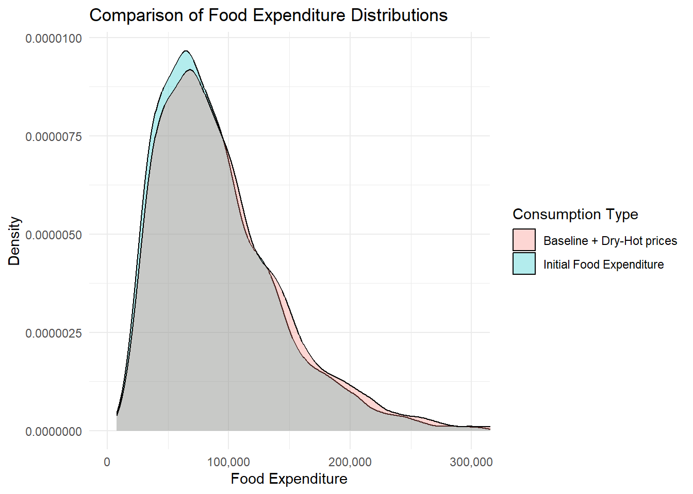
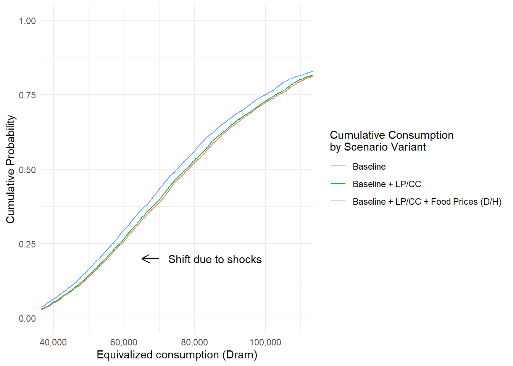
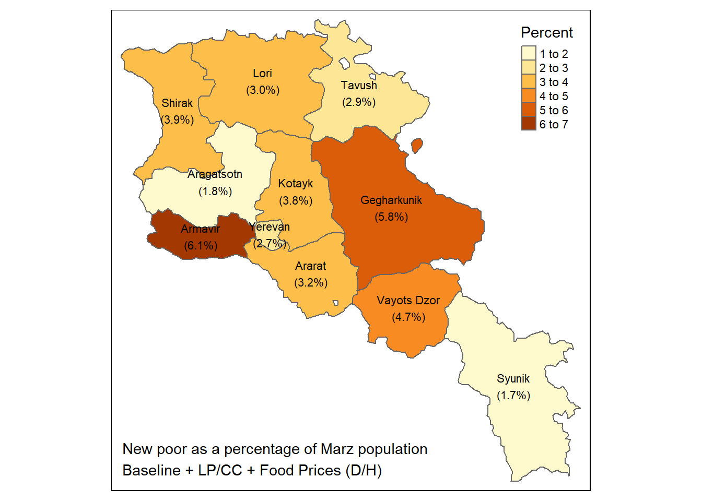

# Some comment that is not evaluated by R
some_variable <- some_function(some_object, some_parameter = TRUE)Armenia CCDR Microsimulation
1 Introduction
In this calculation file, we “age” the household survey according to demographic projections and different macroeconomic scenarios to explore the impact of climate-related risks and policy measures on the consumption expenditure distribution.
As a convention, code is presented in the following format in this guide:
We assume that the reader has created an Rstudio project and is familiar with basic R functions. Within that project we recommend the following file structure:
root/
├── scripts
│ └── my_script.R
├── data/
| ├── my_data.sav
| ├── my_data.dta
| └── my_data.csv
└── output
├── my_output1.csv
└── my_output2.xlsxUsing RStudio project makes it possible to not use setwd() to establish the root directory and refer to subdirectories in a relative manner, making interoperability easier within teams and not hard coding a particular computer’s file structure into the code. If you are not using RStudio, just add setwd(r'(C:\My\path\to\project\root)') at the beginning of your coding session.
2 Preamble
We start with a clean environment, making sure that any objects from a previous session are not present. We take this opportunity to keep our country ISO code in a variable iso in case we need it later.
# Clean workspace
rm(list = ls())
# Armenia country ISO code
iso <- "ARM"
# Survey year
surveyyear <- 2022
# Exchange rate USD per dram
er <- 0.002310We call the appropriate libraries.
Rather than calling our libraries as we go, we will make sure we have everything we need from the beginning.
# Load packages
library(tidyverse) # includes dplyr, ggplot2 and others
library(haven) # to read SPSS and Stata datasets
library(readxl) # to read from MS-Excel
library(openxlsx) # to write to MS-Excel.
library(gt) # pretty tables
library(car) # Companion to applied regression
library(modelr) # regression models
#library(ebal) # Entropy reweighting
library(anesrake) # Raking reweighting
#library(weights) # Weigthed survey statistics
library(janitor) # pretty subtotals
library(broom) # More regressions
library(purrr) # map vectors (aggregation)
library(zoo) # Calculate moving window average and max value
# Geopackages
library(sf) # to read and write shapefile maps
library(terra) # to perform geocalculations
library(tmap) # for static and interactive mapsStata integration
library(RStata) # stata integration for wentropy function
options("RStata.StataPath" = "\"C:\\Program Files (x86)\\Stata11\\StataMP\"")
options("RStata.StataVersion" = 11)3 Datasets
We then load the datasets that we need for this study. The World Bank has processed some of these already for poverty analysis and so we have the original SPSS datasets with all variables for Households hh and for Individuals pp, as well as a consumption aggregate ca and a household income ic dataset, which are Stata datasets. This is for the year 2022. These are imported using the haven package. These are based on Armenia Integrated Living Conditions Survey 2022 (ARMSTAT, 2023).
# Original SPSS datasets
# Households (hh)
hh <- read_sav(
"data/ARM-HH-survey/original-spss-files/ILCS-ARM-2022-Households.sav")
# Persons (pp)
pp <- read_sav(
"data/ARM-HH-survey/original-spss-files/ILCS-ARM-2022-Persons.sav")
# Processed WB datasets
# Consumption aggregate at household level (ca)
ca <- read_dta("data/ARM-HH-survey/CONSAGG2022.dta")
# Processed income at household level (ic)
ic <- read_dta("data/ARM-HH-survey/totinc.dta")
# Food diary
food_with_prices <- read_dta("data/ARM-HH-survey/FOOD_with_prices_short.dta")We will work non-destructively, meaning we will not rewrite these data sets and we will only create intermediate data frame objects from them to perform transformations, selections and other data management tasks. For example, we will keep household assignment to poverty status and consumption deciles handy by creating a subset of our ca data with only our household identifiers, deciles, and poverty.
# From the WB processed dataset, we extract deciles and poverty
deciles <- ca %>%
select( hhid, decile, poor_Avpovln2022,
poor_Foodpovln2022, poor_Lpovln2022, poor_Upovln2022)Our population data comes from UN’s projections.
# Population projections UN 2022
population_projections <- read_dta("data/UN2022_population.dta") %>%
filter(country == iso)Macro scenario dataset
scenario_file <- "data/ARM-Microsimulation/ARM_MacroScenarioInformation.xlsx"
scenario_varlist <- read_xlsx(
"data/ARM-Microsimulation/ARM_Macro_varlist.xlsx")
prices_2030 <-
read.csv("data/ARM-Microsimulation/prices2030.csv")Economic sectors.
sectors <- read_xlsx("data/ARM-HH-survey/economic_activity_codes.xlsx")We also have geographical information for level 1 in Shapefile format, which we import with the sf package. We rename the column with the name of the administrative region to match our household survey data set conventions to ease mergers. The dplyr package from the tidyverse meta package allows us to “pipe” or link processing steps using the %>% pipe, which can be inserted using Ctrl + m. Although there is no geoprocessing in this analysis, this will come in handy for graphical presentations. Let’s have a look at it.
# Geodata
# Armenia marzes or administrative level 1 shapefile
adm1 <- read_sf("data/ARM-Geodata/ARM-ADM1.shp") %>%
select(NAM_1, COD_HH_SVY, geometry) %>%
# Make sure that names match the rest of datasets
mutate(NAM_1 = if_else(NAM_1 == "Gergharkunik", "Gegharkunik", NAM_1))
names(adm1)[2] <- "hh_02"
tm_shape(adm1)+
tm_polygons("NAM_1", legend.show = FALSE) +
tm_text("NAM_1", size = 3/4)
Marzes names are more accurate in the shapefile than in the survey. We will use them from here on instead of the survey factor labels.
hh <- hh %>%
left_join(adm1, join_by(hh_02 == hh_02)) %>%
select(-geometry)
ic <- ic %>%
left_join(adm1, join_by(hh_02 == hh_02)) %>%
select(-geometry)Labor productivity
file <- r"(data/ARM-Microsimulation/LaborProductivityChanges.xlsx)"
sheets <- excel_sheets(file)
# Use lapply to read and process each sheet
heat_l_pdcty <- lapply(sheets, function(sheet) {
info <- read_excel(
file,
sheet = sheet,
col_names = TRUE,
col_types = c("text", "text", "numeric", "text", "numeric")
)
info$sector <- sheet
return(info)
})
# Bind all data frames in the list into a single data frame
heat_l_pdcty <- bind_rows(heat_l_pdcty)Finally, but not least important, we have our vulnerability information.
buildings_aal <-
read_xlsx("data/ARM-Vulnerability-Analysis/Data_AAL_AAE.xlsx",
sheet = "Building_AAL") %>%
# Make sure that names match the rest of datasets
mutate(NAM_1 = if_else(NAM_1 == "Gergharkunik", "Gegharkunik", NAM_1))
buildings_1in100 <-
read_xlsx("data/ARM-Vulnerability-Analysis/Data_AAL_AAE.xlsx",
sheet = "Building_1in100")
crops_productivity <-
read.csv("data/ARM-Vulnerability-Analysis/ARM_crops_combined_REF_shock_admin1.csv") %>%
rename(NAM_1 = Province)
livestock_productivity <-
read.csv(
"data/ARM-Vulnerability-Analysis/ARM_livestock_REF_shock_admin1.csv"
) %>%
rename(NAM_1 = Province)
crops_aal <-
read_xlsx("data/ARM-Vulnerability-Analysis/Data_AAL_AAE.xlsx",
sheet = "Agriculture_AAL")
crops_1in100 <-
read_xlsx("data/ARM-Vulnerability-Analysis/Data_AAL_AAE.xlsx",
sheet = "Agriculture_1in100")4 Data preparation income outliers and missings
4.1 Household consumption aggregates and characteristics
Initial necessary variables.
consumption_aggregates <- ca %>%
mutate(rural = ifelse(urb_rur == 2, 1, 0), # Create rural indicator
yhh = totc, # Total household expenditure
wgt_adj = pweight) %>% # Make a copy of the weight variable
select(hhid, rural, hhsize,hhsize_R, marz, aepc, yhh, wgt_adj, weight,
Foodpovln2022, Lpovln2022, Upovln2022, Avpovln2022,
poor_Foodpovln2022, poor_Lpovln2022, poor_Upovln2022,
poor_Avpovln2022, decile ) # Keep only necessary columns4.2 Demographic characteristics, education, Labor Force
Here the original code calls for Zone data, which is not present in our dataset, due to the different administrative structure of Armenia. However, we use hh_01_code (settlement) for this purpose.
# Zone data
zone_data <- hh %>%
select(interview__key, hh_01_code, hh_02, hh_03, NAM_1) %>%
mutate(
hhid = interview__key, # Household id
zone = hh_01_code, # Settlement
marz = hh_02, # Marz
NAM_1 = NAM_1, # Marz name
urb_rur = hh_03 # Urban / rural
)Demographic data, merge with zone data Note that ed_03 (educy) below is not years of education, but education level (primary, general, secondary, etc.) However, it is ordered in a way that higher levels imply more years of education. We perform several steps within the first pipe call.
pp_microsim <- pp %>%
rename(hhid = interview__key) %>%
left_join(zone_data, join_by( hhid == hhid)) %>%
mutate(# Demographic characteristics
pid = paste0(interview__key, "-",
str_pad(mem_001__id, 2, pad = "0")), # Unique person id
gender = mem_02,
age = mem_05,
head = ifelse(mem_03 == 1, 1, 0),
# Education level
educy = ifelse(is.na(ed_03) | ed_03 == 8, 0, ed_03),
# Labor Force Status
lstatus = case_when(
# 1. Employed
est_03 == 1 | est_04 == 1 | est_05 == 1 | est_06 == 1 | est_08 == 1 ~ 1L,
# 2. Unemployed (available, and searching)
est_10 == 1 ~ 2L,
# 3. Inactive (available, not searching)
est_10 == 2 ~ 3L,
# Out of the labor force
.default = 4L # Default to OLF
),
employed = (lstatus == 1),
# Salaried status (1. paid employee; 2 self-employed)
salaried = ifelse(!is.na(emp_11a), 1L,
ifelse(is.na(emp_11a) & employed == TRUE, 0L, NA_integer_))
) %>%
rename(rel = mem_03) # %>%
# select(hhid, pid, gender, age, head, rel, zone, marz, urb_rur, educy,
# lstatus, employed, salaried, ) Later, when we conduct the reweighting of the dataset, we need to summarise into three levels of education.
pp_microsim <- pp_microsim %>%
mutate(calif = case_when(
educy >= 0 & educy <= 2 ~ "None - General",
educy > 3 & educy <= 7 ~ "Secondary - Vocational",
educy > 7 & educy <= 11 ~ "Higher +",
TRUE ~ NA_character_ # This handles any values outside the specified ranges
))
# View the first few rows to confirm the recoding
head(pp_microsim[,c("calif")])# A tibble: 6 × 1
calif
<chr>
1 Secondary - Vocational
2 None - General
3 Secondary - Vocational
4 Secondary - Vocational
5 Secondary - Vocational
6 Secondary - VocationalCount the number of employed persons by household.
pp_microsim <- pp_microsim %>%
mutate(employed = (lstatus == 1)) %>%
group_by(hhid) %>%
mutate(employed_hh = sum(employed, na.rm = TRUE)) %>% # Count within each household
ungroup() Here the original Stata code calculates income variables and aggregates them by household. We skip that because the dataset “ic” already has these elements calculated by the WB poverty team. We’ll add them later.
Primary and Secondary Job income
- emp_11 11.How much was %rostertitle%’s payment for wages/salary/income for last month?
- emp_12 12.What period of time was the wage/income for?
- emp_25 25.How much was %rostertitle%’s payment for wages/salary/income for last month?
- emp_26 26.What period of time was the wage/income for?
Bonus, In-Kind, and food from job was not asked in Armenia, If it were, you should add a mutate() statement like the ones below for each subcategory.
pp_microsim <- pp_microsim %>%
# Labor income primary job
mutate(annual_labor_income_primary = case_when(
emp_12 == 1 ~ emp_11 * 365,
emp_12 == 2 ~ (emp_11/7) * 365, # Assuming weekly rate
emp_12 == 3 ~ (emp_11/14) * 365,
emp_12 == 4 ~ emp_11 * 12,
emp_12 == 5 ~ emp_11 * 2,
emp_12 == 6 ~ emp_11,
emp_12 == 7 ~ NA
)) %>%
# Labor income secondary job
mutate(annual_labor_income_secondary = case_when(
emp_26 == 1 ~ emp_25 * 365,
emp_26 == 2 ~ (emp_25/7) * 365, # Assuming weekly rate
emp_26 == 3 ~ (emp_25/14) * 365,
emp_26 == 4 ~ emp_25 * 12,
emp_26 == 5 ~ emp_25 * 2,
emp_26 == 6 ~ emp_25,
emp_26 == 7 ~ NA
)) %>%
# Annual labor total in thousands of dram
mutate(annual_labor_total = (coalesce(annual_labor_income_primary, 0) +
coalesce(annual_labor_income_secondary, 0))/1000)
# Restore annual_labor_total to NA if both NA
pp_microsim <- pp_microsim %>%
mutate(annual_labor_total =
if_else(
is.na(annual_labor_income_primary)
& is.na(annual_labor_income_secondary),
NA,
annual_labor_total))26.23% employed with no labor income reported!!! We calculate this way:
total_employed_no_income <- pp_microsim %>%
filter(employed == TRUE & is.na(annual_labor_total)) %>%
nrow()
total_employed <- pp_microsim %>%
filter(employed == TRUE) %>%
nrow()
percent_employed_no_income <- (total_employed_no_income / total_employed) * 100
print(percent_employed_no_income)[1] 28.57496Let’s flag outliers now
pp_microsim <- pp_microsim %>%
# Filter for employed and positive income
#filter(employed == TRUE & annual_labor_total > 0) %>%
mutate(
sd = sd(annual_labor_total, na.rm = TRUE), # Calculate standard deviation
d = annual_labor_total / sd,
# Combined outlier condition
outlier = (d > 5) | (employed == TRUE & annual_labor_total == 0),
# Mark potential missings
missings = if_else(employed == TRUE, is.na(annual_labor_total), NA)
) Economic sector
pp_microsim <- pp_microsim %>%
mutate(emp_04 = as.integer(emp_04)) %>%
left_join(sectors, join_by("emp_04" == "economic_activity_code") ) %>%
rename(sector = ea_shortcode)Impute sector for those with missing employed by hh head sector.
Step 1: Impute sector for missing employed by the sector of any other hh member.
pp_microsim <- pp_microsim %>%
group_by(hhid) %>%
mutate(
# Create a temporary variable 'other_sector' which captures the sector of any employed individual in the household
other_sector = if_else(employed == TRUE & !is.na(sector), sector, NA_real_)
) %>%
# Use 'fill' to propagate 'other_sector' values within the household
fill(other_sector, .direction = "downup") %>%
mutate(
# Impute missing 'sector' values based on the 'other_sector'
sector = if_else(is.na(sector) & employed == TRUE, other_sector, sector)
) %>%
# Drop the temporary 'other_sector' variable
select(-other_sector) %>%
ungroup()Step 2: Assign a specific value for missing sectors for those employed with no one else in the hh to assign value. We select services as it’s the heaviest sector in the dataset (we do it like this, instead of say, matching, because it’s only 2 observations).
pp_microsim <- pp_microsim %>%
mutate(sector = if_else(is.na(sector) & employed == TRUE, 3, sector))Step 4: Label the sector variable.
pp_microsim <- pp_microsim %>%
mutate(sector_name = factor(sector, levels = c(1, 2, 3),
labels = c("Agriculture",
"Manufacturing", "Services"))
)Step 5: No sector for OLF and clonevar industry=sector (this from original Stata code).
pp_microsim <- pp_microsim %>%
mutate(lstatus = as.numeric(lstatus),
sector = if_else(lstatus == 4, as.character(NA), as.character(sector)),
industry = as.factor(sector)) %>%
mutate(sector_w = sector) # We need this for reweighting and not messing up
# and not mess up the regression below.4.3 The regression
Prepare the data.
pp_microsim <- pp_microsim %>%
mutate(
educy2 = educy^2,
age2 = age^2,
male = case_when(
gender == 1 ~ 1,
gender == 2 ~ 0
),
lnlab = log(annual_labor_total),
simuli = NA_real_ # Initialize simuli
)Filter the data for regression conditions.
regression_data <- pp_microsim %>%
filter(employed == TRUE & outlier == FALSE & missings == FALSE)Regression model.
model <- lm(lnlab ~ age + gender + educy + age2 + marz + sector,
data = regression_data)Predict for specific conditions
pp_microsim <- pp_microsim %>%
mutate(
condition = (lstatus == 1 & (outlier == TRUE | missings == TRUE))
)Applying predictions.
Note: The ‘predict’ function in R does not directly support conditions within the function call, so we handle this by filtering or subsetting the data as needed.
temp2 equivalent - Note: ‘type = “response”’ might be needed depending on model type.
pp_microsim$simuli[pp_microsim$condition==TRUE] <- exp(
predict(model, pp_microsim[pp_microsim$condition==TRUE, ], type = "response"))Handling negative values in ‘simuli’.
pp_microsim <- pp_microsim %>%
mutate(
simuli = if_else(simuli < 0, 0, simuli)
)There were 8 observations that met the criteria:
We will replace annual_labor_total with this value for those observations.
pp_microsim <- pp_microsim %>%
mutate(annual_labor_total = if_else(
employed == TRUE & (outlier == TRUE | missings == TRUE),
simuli, annual_labor_total))
# And get monthly incomes for everyone
pp_microsim <- pp_microsim %>%
mutate(monthly_labor_income = annual_labor_total / 12)Merging datasets.
pp_microsim <- pp_microsim %>%
left_join(consumption_aggregates, by = "hhid")5 UN Population Projections
Now we are ready to move to our demographic projections and macroeconomic model information.
First, filtering based on country (our iso variable).
population_projections <- population_projections %>%
filter(country == iso)Collapsing data by summing up variables starting with “yf” and “ym” and reshaping data to long format.
population_projections <- population_projections %>%
group_by(Variant, country, cohort) %>%
summarise(across(starts_with(c("yf", "ym")), sum)) %>%
ungroup()`summarise()` has grouped output by 'Variant', 'country'. You can override
using the `.groups` argument.population_projections <- pivot_longer(population_projections,
cols = starts_with(c("yf", "ym")),
names_to = c(".value", "year"),
names_pattern = "(yf|ym)(.*)")Creating new variable total_population as the sum of yf and ym. Dropping country variables.
population_projections <- population_projections %>%
mutate(total_population = yf + ym) %>%
select( -country) %>%
mutate(year = as.numeric(year))Summarizing the year to find the range.
minyear <- surveyyear # Make sure `surveyyear` is correctly defined
maxyear <- max(as.numeric(population_projections$year))
# Print the year range as a check
print(paste("Min Year:", minyear, "- Max Year:", maxyear))[1] "Min Year: 2022 - Max Year: 2100"# With minyear and maxyear defined above
# Initialize a list to store growth data
pop_growth <- list()
# Loop over variants
variants <- unique(population_projections$Variant)
for (variant in variants) {
for (t in minyear:maxyear) {
# Calculate population for year t
pop_t <- population_projections %>%
filter(year == t, Variant == variant) %>%
summarise(sum_pop = sum(total_population)) %>%
pull(sum_pop)
# Calculate population for base year
pop_base <- population_projections %>%
filter(year == minyear, Variant == variant) %>%
summarise(sum_pop = sum(total_population)) %>%
pull(sum_pop)
# Calculate growth rate and store in list with dynamic naming
growth_rate <- pop_t / pop_base
pop_growth[[paste0(t, "_", variant)]] <- list(
growth_rate = growth_rate, pop_t = pop_t
)
}
}
# Convert list to dataframe
pop_growth <- do.call(rbind, lapply(names(pop_growth), function(x) {
# Extract year and variant from the name
parts <- unlist(strsplit(x, "_"))
year <- as.integer(parts[1])
variant <- parts[2]
# Create a tibble for each entry
tibble(year = year,
variant = variant,
total_population = pop_growth[[x]]$pop_t,
pop_growth_rate = pop_growth[[x]]$growth_rate)
}))
# Arrange the dataframe for better readability
pop_growth <- arrange(pop_growth, variant, year)
# Display the first few rows of the dataframe
pop_growth[c(1:09),]# A tibble: 9 × 4
year variant total_population pop_growth_rate
<int> <chr> <dbl> <dbl>
1 2022 Constant-fertility 2780. 1
2 2023 Constant-fertility 2778. 0.999
3 2024 Constant-fertility 2778. 0.999
4 2025 Constant-fertility 2776. 0.998
5 2026 Constant-fertility 2774. 0.998
6 2027 Constant-fertility 2770. 0.996
7 2028 Constant-fertility 2766. 0.995
8 2029 Constant-fertility 2761. 0.993
9 2030 Constant-fertility 2755. 0.991We load elasticities.
elasticities <- c(0.82, 0.9, 0.79) # Agr, Manuf, Services
yearsto <- c(2030)6 Macro Scenarios
The following code accomplishes the following:
- Import data from Excel sheets corresponding to each scenario and combine them into one data frame.
- Rename columns, create a ‘scenid’ to identify scenarios, and merge with population projections.
- Calculate real wages and consumption per capita.
# Macro Scenario File imported in "Datasets" section (scenario_file)
sheets <- excel_sheets(scenario_file)
scenario_sheets <- sheets[c(1,2)]
# Define the names of the scenarios and the variants
# modify list with the tab numbers in the Excel file
scenarios <- scenario_sheets %>%
# Convert all text to lowercase
str_to_lower() %>%
# Replace all spaces and hyphens with underscores
str_replace_all("[ -]", "_") %>%
# Remove the word 'scenario' or 'scenarios'
str_remove_all("scenario?s?") %>%
# Remove leading and trailing underscores
str_replace_all("^_+|_+$", "")
# Create an empty list to store data frames for each scenario
scen_data_list <- list()
# Import data for each scenario and store it in the list
for (i in seq_along(scenarios)) {
sheet_data <- read_excel(scenario_file,
sheet = scenario_sheets[i],
range = "B3:AT31",
col_names = FALSE)
sheet_data$scenario_id <- scenarios[i]
colnames(sheet_data) <- scenario_varlist$var_short_name
scen_data_list[[i]] <- sheet_data
}New names:
New names:
• `` -> `...1`
• `` -> `...2`
• `` -> `...3`
• `` -> `...4`
• `` -> `...5`
• `` -> `...6`
• `` -> `...7`
• `` -> `...8`
• `` -> `...9`
• `` -> `...10`
• `` -> `...11`
• `` -> `...12`
• `` -> `...13`
• `` -> `...14`
• `` -> `...15`
• `` -> `...16`
• `` -> `...17`
• `` -> `...18`
• `` -> `...19`
• `` -> `...20`
• `` -> `...21`
• `` -> `...22`
• `` -> `...23`
• `` -> `...24`
• `` -> `...25`
• `` -> `...26`
• `` -> `...27`
• `` -> `...28`
• `` -> `...29`
• `` -> `...30`
• `` -> `...31`
• `` -> `...32`
• `` -> `...33`
• `` -> `...34`
• `` -> `...35`
• `` -> `...36`
• `` -> `...37`
• `` -> `...38`
• `` -> `...39`
• `` -> `...40`
• `` -> `...41`
• `` -> `...42`
• `` -> `...43`
• `` -> `...44`
• `` -> `...45`# Combine all data frames into one
combined_data <- bind_rows(scen_data_list)
# Rename population_m from the data set because we will use
# UN pop projections from the other data set.
combined_data <- combined_data %>%
rename(population_m_macrodata = population_m)
# Calculate real wages
combined_data <- combined_data %>%
mutate(rwage_agr_m_amd = wage_agr_m_amd / cpi,
rwage_man_m_amd = wage_man_m_amd / cpi,
rwage_ser_m_amd = wage_ser_m_amd / cpi)
pop_data <- population_projections %>%
group_by(Variant, year) %>%
summarise(female = sum(yf),
male = sum(ym),
total_population = sum(total_population) ) %>%
ungroup()`summarise()` has grouped output by 'Variant'. You can override using the
`.groups` argument.# Filter population data to macro model years
pop_data <- pop_data %>%
filter(year <= max(combined_data$year),
Variant == variants[7])
# Merge the combined data with population projections
macro_data <- combined_data %>%
left_join(pop_data, by = c("year"))
# Calculate consumption per capita and other totals
macro_data <- macro_data %>%
mutate(
consumption_pc = consumption_b_amd / (total_population),
total_employment = lab_agr_1000p + lab_man_1000p + lab_ser_1000p,
employment_rate = working_age_pop_m / total_population
)
# Function to add growth rate columns directly in the dataframe
calculate_growth <- function(data, value_column) {
growth_col_name <- paste0(value_column, "_growth") # dynamic name for growth column
data %>%
arrange(year) %>%
group_by(Variant, scenario_id) %>%
mutate(
base_value = first(!!sym(value_column)),
!!sym(growth_col_name) := !!sym(value_column) / base_value
) %>%
select(-base_value) %>% # optionally remove base_value column if not needed
ungroup()
}
# Columns to calculate growth for
value_columns <- c(
"gdp_b_amd", # GDP
"consumption_b_amd", # Consumption
"consumption_pc", # Consumption PC
"remittances_b_amd", # Remittances
"total_employment", # Employment
"employment_rate", # Employment rate
"working_age_pop_m", # Working age population
"va_agr_b_amd", # Value added agriculture
"va_man_b_amd", # Value added manufacturing
"va_ser_b_amd", # Value added services
"wage_agr_m_amd", # Nominal wage agriculture
"wage_man_m_amd", # Nominal wage manufacturing
"wage_ser_m_amd", # Nominal wage services
"rwage_agr_m_amd", # Real wage agriculture
"rwage_man_m_amd", # Real wage manufacturing
"rwage_ser_m_amd" # Real wage services
)
# Applying the growth calculation to the macro_data for each column
for (col in value_columns) {
macro_data <- calculate_growth(macro_data, col)
}
# Now `macro_data` will have growth rate columns for each of the variables listed
# We rearrange the dataset for clarity
macro_data <- macro_data %>%
relocate(scenario_id, Variant, .before = year) %>%
arrange(scenario_id, Variant, year)7 Reweighting of the dataset
7.1 Aggregation of population data
This is based on a custom command to reweight the survey according to macroeconomic data for every possible combination of variant, year, and country. In the macro data we know they only used the “medium” variant and we only need to reweight for a specific year (2030) for Armenia (ARM), so we will conduct the reweighting directly with these parameters.
# We join several cohorts from 0 to 29 years old and from
# 60 onwards, because the reweighting procedure works
# best if each category is at least 5% of the population
# The solution here works best for Armenia.
population_projections <- population_projections %>%
# filter(Variant == "Medium") %>%
# Recoding cohorts into ordered factors
mutate(cohort_short = factor(case_when(
cohort %in% c("P0004", "P0509","P1014",
"P1519","P2024", "P2529") ~ "P0029",
cohort %in% c("P3034", "P3539") ~ "P3039",
cohort %in% c("P4044", "P4549") ~ "P4049",
cohort %in% c("P5054", "P5559") ~ "P5059",
cohort %in% c("P6064", "P6569","P7074", "P7579",
"P8084", "P8589", "P9094", "P9599",
"P100up") ~ "P60up"
), levels = c("P0029", "P3039",
"P4049", "P5059", "P60up"))) %>%
# Convert factor 'cohort' to numeric codes
mutate(cohort_code = as.integer(cohort_short))
# Checking the resulting dataset
print(pop_data)# A tibble: 60 × 5
Variant year female male total_population
<chr> <dbl> <dbl> <dbl> <dbl>
1 Medium 1991 1867. 1750. 3618.
2 Medium 1992 1850. 1724. 3575.
3 Medium 1993 1799. 1658. 3457.
4 Medium 1994 1763. 1610. 3374.
5 Medium 1995 1741. 1581. 3323.
6 Medium 1996 1731. 1568. 3299.
7 Medium 1997 1719. 1552. 3271.
8 Medium 1998 1705. 1535. 3241.
9 Medium 1999 1689. 1517. 3206.
10 Medium 2000 1672. 1496. 3169.
# ℹ 50 more rowsLet’s now create cohorts in our pp_microsim data to match our population projection data.
# Convert 'age' into 'cohort' factor with levels ordered as specified
pp_microsim <- pp_microsim %>%
mutate(cohort = factor(case_when(
age >= 0 & age <= 29 ~ "P0029",
age >= 30 & age <= 39 ~ "P3039",
age >= 40 & age <= 49 ~ "P4049",
age >= 50 & age <= 59 ~ "P5059",
age >= 60 ~ "P60up"
), levels = c("P0029", "P3039", "P4049", "P5059", "P60up")))
# Convert the 'cohort' and 'gender' factor to numeric codes
pp_microsim <- pp_microsim %>%
mutate(cohort_code = as.integer(cohort)) %>%
mutate(gender_code = as.integer(gender))We also need demographic targets for 2030
# Ensure pop_targets_2030 is correctly prepared
# We use the "Medium" variant = variants[7]
pop_targets_2030 <- population_projections %>%
filter(year == 2030, Variant == variants[7]) %>%
group_by(cohort_code, cohort_short) %>%
summarise(female = sum(yf),
male = sum(ym),
total = sum(total_population),
) %>%
ungroup()`summarise()` has grouped output by 'cohort_code'. You can override using the
`.groups` argument.pop_total <- sum(pop_targets_2030$total)
pop_targets_2030 <- pop_targets_2030 %>%
mutate(pct_total = total / pop_total)
#writeClipboard(as_raw_html(gt(pop_targets_2030)))And economic targets from our macroeconomic scenario data.
economic_targets_2030 <- macro_data %>%
filter(year == 2030, Variant == "Medium", scenario_id == "baseline") %>%
summarise(
target_lab_agr = sum(lab_agr_1000p * 1000),
target_lab_man = sum(lab_man_1000p * 1000),
target_lab_ser = sum(lab_ser_1000p * 1000)
)For a better representation of the labor market, we will take into account the combination between labor status and economic sector of the employed and adjust that combination according to the macrodata so that we can accurately model changes in total employment, sector distribution of the employed and overall population changes.
pp_microsim <- pp_microsim %>%
mutate(lmarket = case_when(
lstatus == 1 & sector_w == 1 ~ 1, # Agriculture
lstatus == 1 & sector_w == 2 ~ 2, # Manufactures
lstatus == 1 & sector_w == 3 ~ 3, # Services
lstatus == 2 & is.na(sector_w) ~ 4, # Unemployed
lstatus == 3 & is.na(sector_w) ~ 4, # Unemployed
lstatus == 4 & is.na(sector_w) ~ 5, # OLF
))Note that the differences between the totals of the survey and the macro file for the base year are very much different. We’ll adjust the survey only with relative growth instead of total numbers so that labor income doesn’t change completely.
7.2 Reweigting
We use anesrake to calculate targets from known future proportions of sex, age, economic sector. We first create a target list.
# Target for each variable
gender_code <- c(
sum(pop_targets_2030$male) /
(sum(pop_targets_2030$male)+ sum(pop_targets_2030$female)),
sum(pop_targets_2030$female) /
(sum(pop_targets_2030$male)+ sum(pop_targets_2030$female)))
cohort_code <- pop_targets_2030$pct_total
# Four digits are better than two in this case, raking is quite accurate.
lmarket_baseline <- c(0.1341, 0.0494, 0.2611, 0.2472, 0.3082)
lmarket_dry_hot <- c(0.1368, 0.0489, 0.2593, 0.2472, 0.3078)
# Note how similar the scenarios are
# Target list baseline
targets_baseline <- list(gender_code
, cohort_code
, lmarket_baseline
)
names(targets_baseline) <- c("gender_code",
"cohort_code",
"lmarket"
)
# Target list Dry/Hot
targets_dry_hot <- list(gender_code
, cohort_code
, lmarket_dry_hot
)
names(targets_dry_hot) <- c("gender_code",
"cohort_code",
"lmarket"
)And now we perform the reweighting, using the original weights. Initially we had used the default option type = “pctlim” combined with pctlim=0.05, because the method recommends that if reweighting changes for one variable according to its target are not of at least 5%, then it’s not worth burdening the procedure with it. It then ignored sex as a reweighting variable, leaving a small percentage difference between the target and the final population. However, we then tried removing this limitation and the procedure reached convergence in 33 iterations very efficiently.
# Since this uses base R, we need to turn the data frame into base R object
rakedata <- as.data.frame(pp_microsim)
anesrakefinder(targets_baseline, rakedata, choosemethod = "total")gender_code cohort_code lmarket
0.03626510 0.09677000 0.07212418 outsave <- anesrake(targets_baseline,
rakedata,
caseid = rakedata$pid,
#verbose = FALSE,
choosemethod = "total",
#type = "pctlim",
type = "nolim",
#cap = 100,
#pctlim = 0.05,
nlim = 3,
iterate = TRUE,
force1 = TRUE,
verbose = TRUE,
weightvec = rakedata$weight)[1] "Raking...Iteration 1"
[1] "Current iteration changed total weights by 2365.37047462746"
[1] "Raking...Iteration 2"
[1] "Current iteration changed total weights by 345.629544201074"
[1] "Raking...Iteration 3"
[1] "Current iteration changed total weights by 51.129532012726"
[1] "Raking...Iteration 4"
[1] "Current iteration changed total weights by 15.8102078836608"
[1] "Raking...Iteration 5"
[1] "Current iteration changed total weights by 5.00226200109642"
[1] "Raking...Iteration 6"
[1] "Current iteration changed total weights by 1.58313448389485"
[1] "Raking...Iteration 7"
[1] "Current iteration changed total weights by 0.500820317613819"
[1] "Raking...Iteration 8"
[1] "Current iteration changed total weights by 0.158458854255416"
[1] "Raking...Iteration 9"
[1] "Current iteration changed total weights by 0.0501397739726498"
[1] "Raking...Iteration 10"
[1] "Current iteration changed total weights by 0.0158655682184549"
[1] "Raking...Iteration 11"
[1] "Current iteration changed total weights by 0.00502030487751332"
[1] "Raking...Iteration 12"
[1] "Current iteration changed total weights by 0.00158856388303248"
[1] "Raking...Iteration 13"
[1] "Current iteration changed total weights by 0.000502665741921302"
[1] "Raking...Iteration 14"
[1] "Current iteration changed total weights by 0.000159057405067636"
[1] "Raking...Iteration 15"
[1] "Current iteration changed total weights by 5.03301832327496e-05"
[1] "Raking...Iteration 16"
[1] "Current iteration changed total weights by 1.59258690392711e-05"
[1] "Raking...Iteration 17"
[1] "Current iteration changed total weights by 5.03938627684219e-06"
[1] "Raking...Iteration 18"
[1] "Current iteration changed total weights by 1.59460194727734e-06"
[1] "Raking...Iteration 19"
[1] "Current iteration changed total weights by 5.04577232413039e-07"
[1] "Raking...Iteration 20"
[1] "Current iteration changed total weights by 1.59661560861224e-07"
[1] "Raking...Iteration 21"
[1] "Current iteration changed total weights by 5.05214382690022e-08"
[1] "Raking...Iteration 22"
[1] "Current iteration changed total weights by 1.59870944677065e-08"
[1] "Raking...Iteration 23"
[1] "Current iteration changed total weights by 5.05728310618014e-09"
[1] "Raking...Iteration 24"
[1] "Current iteration changed total weights by 1.60276966698625e-09"
[1] "Raking...Iteration 25"
[1] "Current iteration changed total weights by 5.05979536047363e-10"
[1] "Raking...Iteration 26"
[1] "Current iteration changed total weights by 1.60390659087462e-10"
[1] "Raking...Iteration 27"
[1] "Current iteration changed total weights by 5.05322866883873e-11"
[1] "Raking...Iteration 28"
[1] "Current iteration changed total weights by 1.52227813687844e-11"
[1] "Raking...Iteration 29"
[1] "Current iteration changed total weights by 5.3808346667239e-12"
[1] "Raking...Iteration 30"
[1] "Current iteration changed total weights by 2.08032202575481e-12"
[1] "Raking...Iteration 31"
[1] "Current iteration changed total weights by 6.44706510399828e-13"
[1] "Raking...Iteration 32"
[1] "Current iteration changed total weights by 0"
[1] "Raking...Iteration 33"
[1] "Current iteration changed total weights by 0"
[1] "Raking converged in 33 iterations"summary(outsave)$convergence
[1] "Complete convergence was achieved after 33 iterations"
$base.weights
[1] "Using Base Weights Provided"
$raking.variables
[1] "gender_code" "cohort_code" "lmarket"
$weight.summary
Min. 1st Qu. Median Mean 3rd Qu. Max.
0.1034 0.6701 0.9287 1.0000 1.2687 3.3900
$selection.method
[1] "variable selection conducted using _nolim_ - discrepancies selected using _total_."
$general.design.effect
[1] 1.244926
$gender_code
Target Old Weights N Old Weights % Wtd N Wtd % Change in %
<NA> 0.4514133 NA NA NA NA NA
<NA> 0.5485867 NA NA NA NA NA
Total 1.0000000 0 0 0 0 0
Resid. Disc. Orig. Disc.
<NA> NA NA
<NA> NA NA
Total 0 0
$cohort_code
Target Old Weights N Old Weights % Wtd N Wtd % Change in %
<NA> 0.3638899 NA NA NA NA NA
<NA> 0.1420277 NA NA NA NA NA
<NA> 0.1630905 NA NA NA NA NA
<NA> 0.1042513 NA NA NA NA NA
<NA> 0.2267405 NA NA NA NA NA
Total 1.0000000 0 0 0 0 0
Resid. Disc. Orig. Disc.
<NA> NA NA
<NA> NA NA
<NA> NA NA
<NA> NA NA
<NA> NA NA
Total 0 0
$lmarket
Target Old Weights N Old Weights % Wtd N Wtd % Change in % Resid. Disc.
<NA> 0.1341 NA NA NA NA NA NA
<NA> 0.0494 NA NA NA NA NA NA
<NA> 0.2611 NA NA NA NA NA NA
<NA> 0.2472 NA NA NA NA NA NA
<NA> 0.3082 NA NA NA NA NA NA
Total 1.0000 0 0 0 0 0 0
Orig. Disc.
<NA> NA
<NA> NA
<NA> NA
<NA> NA
<NA> NA
Total 0# add weights to the dataset
rakedata$weight_2030_baseline <- unlist(outsave[1])
n <- length(rakedata$sector)
# Calculate the sum of original weights
original_weight_sum <- sum(rakedata$weight)
# # Target scaling for original weights
# In a first version, we used the population scaling from UN,
# But to match with the labor market given by the scenario, we take
# the total population from the macro scenario information. Differences are
# small anyway.
# original_weight_scaling_factor <-
# pop_data$total_population[pop_data$year == 2030] /
# pop_data$total_population[pop_data$year == 2022]
# For year 2030 (Calculated in Excel, but need a more elegant solution
# from macrodataset)
original_weight_scaling_factor <- 0.992805755
# Scaled original weights
original_weight_sum <- (original_weight_sum
* original_weight_scaling_factor)
# Calculate the sum of the new weights
new_weight_sum <- sum(rakedata$weight_2030_baseline)
# Scale the new weights to match the sum of the original weights
scaling_factor <- original_weight_sum / new_weight_sum
rakedata$weight_2030_baseline <- rakedata$weight_2030_baseline * scaling_factor
# Verify the adjustment
head(rakedata[, c("weight", "weight_2030_baseline")]) weight weight_2030_baseline
1 185.7685 175.1387
2 185.7685 188.3611
3 122.7176 101.5911
4 185.7685 191.9173
5 326.8796 264.6620
6 326.8796 337.6990summary(rakedata$weight_2030_baseline) Min. 1st Qu. Median Mean 3rd Qu. Max.
15.87 102.91 142.63 153.57 194.84 520.60 summary(rakedata$weight) Min. 1st Qu. Median Mean 3rd Qu. Max.
21.48 109.82 156.33 154.68 192.16 326.88 hh_size <- rakedata %>%
select(hhid, hhsize) %>%
mutate(ones = 1,
hhsize_old = hhsize) %>%
group_by(hhid) %>%
summarise(hhsize = sum(ones, na.rm = TRUE)) %>%
ungroup()
rakedata <- rakedata %>%
rename(hhsize_old = hhsize) %>%
left_join(hh_size, join_by(hhid)) %>%
relocate(weight, .before = weight_2030_baseline) %>%
mutate(hh_weight_2030_baseline = weight_2030_baseline / hhsize)
pp_microsim <- tibble(rakedata)
rm(rakedata)We now do the Dry/Hot Scenario. The efficient way of doing this is through a loop or sapply, but as we’re strapped for time we will just repeat the code. (Needs rework.)
# Since this uses base R, we need to turn the data frame into base R object
rakedata <- as.data.frame(pp_microsim)
anesrakefinder(targets_dry_hot, rakedata, choosemethod = "total")gender_code cohort_code lmarket
0.03626510 0.09677000 0.06672418 outsave <- anesrake(targets_dry_hot,
rakedata,
caseid = rakedata$pid,
#verbose = FALSE,
choosemethod = "total",
#type = "pctlim",
type = "nolim",
#cap = 100,
#pctlim = 0.05,
nlim = 3,
iterate = TRUE,
force1 = TRUE,
verbose = TRUE,
weightvec = rakedata$weight)[1] "Raking...Iteration 1"
[1] "Current iteration changed total weights by 2350.42100984824"
[1] "Raking...Iteration 2"
[1] "Current iteration changed total weights by 327.800824143871"
[1] "Raking...Iteration 3"
[1] "Current iteration changed total weights by 48.4646674908705"
[1] "Raking...Iteration 4"
[1] "Current iteration changed total weights by 15.0591332668451"
[1] "Raking...Iteration 5"
[1] "Current iteration changed total weights by 4.76527023673584"
[1] "Raking...Iteration 6"
[1] "Current iteration changed total weights by 1.50952971121123"
[1] "Raking...Iteration 7"
[1] "Current iteration changed total weights by 0.477918701816283"
[1] "Raking...Iteration 8"
[1] "Current iteration changed total weights by 0.151329791876323"
[1] "Raking...Iteration 9"
[1] "Current iteration changed total weights by 0.0479208345301924"
[1] "Raking...Iteration 10"
[1] "Current iteration changed total weights by 0.015175102858"
[1] "Raking...Iteration 11"
[1] "Current iteration changed total weights by 0.0048055174821354"
[1] "Raking...Iteration 12"
[1] "Current iteration changed total weights by 0.00152176932434214"
[1] "Raking...Iteration 13"
[1] "Current iteration changed total weights by 0.000481900638637872"
[1] "Raking...Iteration 14"
[1] "Current iteration changed total weights by 0.000152604092209838"
[1] "Raking...Iteration 15"
[1] "Current iteration changed total weights by 4.83253346107576e-05"
[1] "Raking...Iteration 16"
[1] "Current iteration changed total weights by 1.53032442354595e-05"
[1] "Raking...Iteration 17"
[1] "Current iteration changed total weights by 4.8460990282051e-06"
[1] "Raking...Iteration 18"
[1] "Current iteration changed total weights by 1.5346211032774e-06"
[1] "Raking...Iteration 19"
[1] "Current iteration changed total weights by 4.85968348479249e-07"
[1] "Raking...Iteration 20"
[1] "Current iteration changed total weights by 1.53894348695061e-07"
[1] "Raking...Iteration 21"
[1] "Current iteration changed total weights by 4.87326087122986e-08"
[1] "Raking...Iteration 22"
[1] "Current iteration changed total weights by 1.54319526879387e-08"
[1] "Raking...Iteration 23"
[1] "Current iteration changed total weights by 4.8878960184906e-09"
[1] "Raking...Iteration 24"
[1] "Current iteration changed total weights by 1.54612000979881e-09"
[1] "Raking...Iteration 25"
[1] "Current iteration changed total weights by 4.91729171270272e-10"
[1] "Raking...Iteration 26"
[1] "Current iteration changed total weights by 1.54891197090556e-10"
[1] "Raking...Iteration 27"
[1] "Current iteration changed total weights by 4.90309043366111e-11"
[1] "Raking...Iteration 28"
[1] "Current iteration changed total weights by 1.57319296478775e-11"
[1] "Raking...Iteration 29"
[1] "Current iteration changed total weights by 5.07691111373276e-12"
[1] "Raking...Iteration 30"
[1] "Current iteration changed total weights by 2.15254203350668e-12"
[1] "Raking...Iteration 31"
[1] "Current iteration changed total weights by 5.62244695245795e-13"
[1] "Raking...Iteration 32"
[1] "Current iteration changed total weights by 0"
[1] "Raking...Iteration 33"
[1] "Current iteration changed total weights by 0"
[1] "Raking converged in 33 iterations"summary(outsave)$convergence
[1] "Complete convergence was achieved after 33 iterations"
$base.weights
[1] "Using Base Weights Provided"
$raking.variables
[1] "gender_code" "cohort_code" "lmarket"
$weight.summary
Min. 1st Qu. Median Mean 3rd Qu. Max.
0.1032 0.6670 0.9308 1.0000 1.2690 3.3817
$selection.method
[1] "variable selection conducted using _nolim_ - discrepancies selected using _total_."
$general.design.effect
[1] 1.24362
$gender_code
Target Old Weights N Old Weights % Wtd N Wtd % Change in %
<NA> 0.4514133 NA NA NA NA NA
<NA> 0.5485867 NA NA NA NA NA
Total 1.0000000 0 0 0 0 0
Resid. Disc. Orig. Disc.
<NA> NA NA
<NA> NA NA
Total 0 0
$cohort_code
Target Old Weights N Old Weights % Wtd N Wtd % Change in %
<NA> 0.3638899 NA NA NA NA NA
<NA> 0.1420277 NA NA NA NA NA
<NA> 0.1630905 NA NA NA NA NA
<NA> 0.1042513 NA NA NA NA NA
<NA> 0.2267405 NA NA NA NA NA
Total 1.0000000 0 0 0 0 0
Resid. Disc. Orig. Disc.
<NA> NA NA
<NA> NA NA
<NA> NA NA
<NA> NA NA
<NA> NA NA
Total 0 0
$lmarket
Target Old Weights N Old Weights % Wtd N Wtd % Change in % Resid. Disc.
<NA> 0.1368 NA NA NA NA NA NA
<NA> 0.0489 NA NA NA NA NA NA
<NA> 0.2593 NA NA NA NA NA NA
<NA> 0.2472 NA NA NA NA NA NA
<NA> 0.3078 NA NA NA NA NA NA
Total 1.0000 0 0 0 0 0 0
Orig. Disc.
<NA> NA
<NA> NA
<NA> NA
<NA> NA
<NA> NA
Total 0# add weights to the dataset
rakedata$weight_2030_dry_hot <- unlist(outsave[1])
# Calculate the sum of original weights
original_weight_sum <- sum(rakedata$weight)
# # Target scaling for original weights
# In a first version, we used the population scaling from UN,
# But to match with the labor market given by the scenario, we take
# the total population from the macro scenario information. Differences are
# small anyway.
# original_weight_scaling_factor <-
# pop_data$total_population[pop_data$year == 2030] /
# pop_data$total_population[pop_data$year == 2022]
# For year 2030 (Calculated in Excel, but need a more elegant solution
# from macrodataset)
# It's the same as the baseline
original_weight_scaling_factor <- 0.992805755
# Scaled original weights
original_weight_sum <- (original_weight_sum
* original_weight_scaling_factor)
# Calculate the sum of the new weights
new_weight_sum <- sum(rakedata$weight_2030_dry_hot)
# Scale the new weights to match the sum of the original weights
scaling_factor <- original_weight_sum / new_weight_sum
rakedata$weight_2030_dry_hot <- rakedata$weight_2030_dry_hot * scaling_factor
# Verify the adjustment
head(rakedata[, c("weight", "weight_2030_dry_hot")]) weight weight_2030_dry_hot
1 185.7685 174.2201
2 185.7685 188.4009
3 122.7176 101.8206
4 185.7685 190.6847
5 326.8796 263.9341
6 326.8796 335.5302summary(rakedata$weight_2030_dry_hot) Min. 1st Qu. Median Mean 3rd Qu. Max.
15.85 102.44 142.95 153.57 194.88 519.34 summary(rakedata$weight) Min. 1st Qu. Median Mean 3rd Qu. Max.
21.48 109.82 156.33 154.68 192.16 326.88 rakedata <- rakedata %>%
mutate(hh_weight_2030_dry_hot = weight_2030_dry_hot / hhsize)Weights for the household database
# We calculate new weights for households in the hh database
weights_scenarios <- rakedata %>%
group_by(hhid) %>%
summarise(
hh_weight_2030_baseline =
sum(hh_weight_2030_baseline, na.rm = TRUE),
hh_weight_2030_dry_hot =
sum(hh_weight_2030_dry_hot, na.rm = TRUE)
)
# We return rakedata to data frame pp_microsim and get rid of rakedata
pp_microsim <- tibble(rakedata)
rm(rakedata)7.3 Rescaling labor income according to changes to the wage bill
As a last step, we rescale labor income according to changes to the wage bill in the macro scenario.
# Wage rescale factor by sector from macro (Agriculture, Manufacturing, Services)
wrf_2030_baseline <- c(1.269821454, 1.284834838, 1.328623737)
wrf_2030_dry_hot <- c(1.279274540, 1.258485855, 1.302350464)
# We check the wage bill by sector
wages_by_sector <- pp_microsim %>%
filter(!is.na(sector_w)) %>%
group_by(sector_w, .drop = TRUE) %>%
summarise(
wages_2022 = sum(annual_labor_total * weight, na.rm = TRUE),
wages_2030_baseline =
sum(annual_labor_total * weight_2030_baseline, na.rm = TRUE),
wages2030_dry_hot =
sum(annual_labor_total * weight_2030_dry_hot, na.rm = TRUE)
)
# Compare how much it changed with reweighting with how it should have changed
# Derive coefficients (wtc_2030) from that
wages_by_sector <- wages_by_sector %>%
mutate(
wages_target_2030_baseline = case_when(
sector_w == 1 ~ wages_2022 * wrf_2030_baseline[1],
sector_w == 2 ~ wages_2022 * wrf_2030_baseline[2],
sector_w == 3 ~ wages_2022 * wrf_2030_baseline[3],
.default = NA
),
wages_target2030_dry_hot = case_when(
sector_w == 1 ~ wages_2022 * wrf_2030_dry_hot[1],
sector_w == 2 ~ wages_2022 * wrf_2030_dry_hot[2],
sector_w == 3 ~ wages_2022 * wrf_2030_dry_hot[3],
.default = NA
),
wtc_2030_baseline = wages_target_2030_baseline / wages_2030_baseline,
wtc_2030_dry_hot = wages_target2030_dry_hot / wages2030_dry_hot
)
wages_by_sector %>%
gt()| sector_w | wages_2022 | wages_2030_baseline | wages2030_dry_hot | wages_target_2030_baseline | wages_target2030_dry_hot | wtc_2030_baseline | wtc_2030_dry_hot |
|---|---|---|---|---|---|---|---|
| 1 | 329980600 | 328684330 | 335432397 | 419016446 | 422135781 | 1.274829 | 1.258482 |
| 2 | 250074262 | 259221426 | 256676453 | 321304124 | 314714921 | 1.239497 | 1.226115 |
| 3 | 1255196730 | 1303470504 | 1294801936 | 1667684171 | 1634706044 | 1.279418 | 1.262514 |
We then add the coefficient to rescale each wage by sector
# Assign rescale the annual and monthly wage depending on the sector
# Quick way, but needs to be put in a sapply statement or loop
pp_microsim <- pp_microsim %>%
rename(monthly_labor_income_2022 = monthly_labor_income,
annual_labor_total_2022 = annual_labor_total) %>%
mutate(
monthly_labor_income_2030_baseline = case_when(
sector_w == 1 ~ monthly_labor_income_2022 * wages_by_sector$wtc_2030_baseline[1],
sector_w == 2 ~ monthly_labor_income_2022 * wages_by_sector$wtc_2030_baseline[2],
sector_w == 3 ~ monthly_labor_income_2022 * wages_by_sector$wtc_2030_baseline[3],
TRUE ~ NA
),
annual_labor_total_2030_baseline = case_when(
sector_w == 1 ~ annual_labor_total_2022 * wages_by_sector$wtc_2030_baseline[1],
sector_w == 2 ~ annual_labor_total_2022 * wages_by_sector$wtc_2030_baseline[2],
sector_w == 3 ~ annual_labor_total_2022 * wages_by_sector$wtc_2030_baseline[3],
TRUE ~ NA
),
monthly_labor_income_2030_dry_hot = case_when(
sector_w == 1 ~ monthly_labor_income_2022 * wages_by_sector$wtc_2030_dry_hot[1],
sector_w == 2 ~ monthly_labor_income_2022 * wages_by_sector$wtc_2030_dry_hot[2],
sector_w == 3 ~ monthly_labor_income_2022 * wages_by_sector$wtc_2030_dry_hot[3],
TRUE ~ NA
),
annual_labor_total_2030_dry_hot = case_when(
sector_w == 1 ~ annual_labor_total_2022 * wages_by_sector$wtc_2030_dry_hot[1],
sector_w == 2 ~ annual_labor_total_2022 * wages_by_sector$wtc_2030_dry_hot[2],
sector_w == 3 ~ annual_labor_total_2022 * wages_by_sector$wtc_2030_dry_hot[3],
TRUE ~ NA
)
)
# This takes care of different household members coming from different sectors
hh_li <- pp_microsim %>%
group_by(hhid) %>%
summarise(mli_2022 = sum(monthly_labor_income_2022),
mli_2030_baseline = sum(monthly_labor_income_2030_baseline),
mli_2030_dry_hot = sum(monthly_labor_income_2030_dry_hot),
mli_coef_2030_baseline = mli_2030_baseline / mli_2022,
mli_coef_2030_dry_hot = mli_2030_dry_hot / mli_2022,
)%>%
select(hhid, mli_coef_2030_baseline, mli_coef_2030_dry_hot)
ic_microsim <- ic %>%
left_join(hh_li, join_by(interview__key == hhid)) %>%
rename(inc2_2022 = inc2,
inc3_2022 = inc3,
totalinc_2022 = totalinc) %>%
mutate(
mli_coef_2030_baseline =
if_else(
is.na(mli_coef_2030_baseline), 1,mli_coef_2030_baseline),
mli_coef_2030_dry_hot =
if_else(
is.na(mli_coef_2030_dry_hot), 1,mli_coef_2030_dry_hot)
) %>%
mutate(
inc2_2030_baseline = inc2_2022 * mli_coef_2030_baseline,
inc3_2030_baseline = inc3_2022 * mli_coef_2030_baseline,
inc2_2030_dry_hot = inc2_2022 * mli_coef_2030_dry_hot,
inc3_2030_dry_hot = inc3_2022 * mli_coef_2030_dry_hot
) %>%
mutate(
totalinc_2030_baseline =
totalinc_2022 - coalesce(inc2_2022,0) - coalesce(inc3_2022,0) +
coalesce(inc2_2030_baseline,0) + coalesce(inc3_2030_baseline,0),
totalinc_2030_dry_hot =
totalinc_2022 - coalesce(inc2_2022,0) - coalesce(inc3_2022,0) +
coalesce(inc2_2030_dry_hot,0) + coalesce(inc3_2030_dry_hot,0)
) %>%
mutate(
totinc_coef_2030_baseline =
if_else(
totalinc_2022 == 0,
1,
totalinc_2030_baseline / totalinc_2022),
totinc_coef_2030_dry_hot =
if_else(
totalinc_2022 == 0,
1,
totalinc_2030_dry_hot / totalinc_2022)
) %>%
mutate(
totinc_coef_2030_baseline =
if_else(
is.na(totinc_coef_2030_baseline),
1,
totinc_coef_2030_baseline),
totinc_coef_2030_dry_hot =
if_else(
is.na(totinc_coef_2030_dry_hot),
1,
totinc_coef_2030_dry_hot)
)
ic_coef_scenarios <- ic_microsim %>%
select(
interview__key,
totinc_coef_2030_baseline,
totinc_coef_2030_dry_hot
)We check that our reweighting was successful
table <- pp_microsim %>%
group_by(cohort) %>%
# group_by(lmarket,sector_w) %>%
# group_by(gender) %>%
summarise(total_pp = sum(weight_2030_baseline, na.rm = TRUE)) %>%
ungroup()
table %>%
gt() %>%
fmt_number(columns = total_pp, decimals = 0)| cohort | total_pp |
|---|---|
| P0029 | 1,031,260 |
| P3039 | 402,505 |
| P4049 | 462,197 |
| P5059 | 295,447 |
| P60up | 642,580 |
# write.table(
# table,
# "clipboard", sep="\t", row.names=FALSE
# )8 Microsimulation
We now implement different shocks according to various scenarios.
8.1 Macro scenarios without additional impacts
For the baseline we only adjust labor income according to the reweighting procedure and rescaling of the wage bill.
ca_microsim <- ca %>%
left_join(weights_scenarios, join_by(hhid == hhid)) %>%
left_join(ic_coef_scenarios, join_by(hhid == interview__key)) %>%
# We adjust total consumption by the income coefficient
rename(
totc_2022 = totc,
poor_Avpovln2022_2022 = poor_Avpovln2022
) %>%
mutate(
totc_2030_baseline = totc_2022 * totinc_coef_2030_baseline,
totc_2030_dry_hot = totc_2022 * totinc_coef_2030_dry_hot
)And recalculate poverty.
ca_microsim <- ca_microsim %>%
rename(
aec_r_2022 = aec_r,
weight_2022 = weight,
weight_2030_baseline = hh_weight_2030_baseline,
weight_2030_dry_hot = hh_weight_2030_dry_hot
) %>%
mutate(
aec_r_2030_baseline =
totc_2030_baseline / ae_r / PI,
aec_r_2030_dry_hot =
totc_2030_dry_hot / ae_r / PI,
) %>%
# Official poverty line
mutate(
poor_Avpovln2022_2030_baseline =
if_else(aec_r_2030_baseline < 52883, 1, 0),
poor_Avpovln2022_2030_dry_hot =
if_else(aec_r_2030_dry_hot < 52883, 1, 0)
)Test
test_baseline <- ca_microsim %>%
rename(
poor_original = poor_Avpovln2022_2022,
poor_2030_baseline = poor_Avpovln2022_2030_baseline,
poor_2030_dry_hot = poor_Avpovln2022_2030_dry_hot
) %>%
group_by(poor_2030_baseline) %>%
summarise(
no_hh_baseline = round(sum(weight_2030_baseline, na.rm = TRUE)),
no_pp_baseline = round(sum(weight_2030_baseline * hhsize, na.rm = TRUE)),
no_hh_dry_hot = round(sum(weight_2030_dry_hot, na.rm = TRUE)),
no_pp_dry_hot = round(sum(weight_2030_dry_hot * hhsize, na.rm = TRUE))
) %>%
ungroup()
test_baseline %>%
gt()| poor_2030_baseline | no_hh_baseline | no_pp_baseline | no_hh_dry_hot | no_pp_dry_hot |
|---|---|---|---|---|
| 0 | 644051 | 2136703 | 643543 | 2136057 |
| 1 | 139817 | 697287 | 139909 | 697933 |
##write.table(test_baseline, "clipboard", sep="\t", row.names=FALSE)8.2 Climate change
In the climate change scenario, we ask ourselves, what would happen if agriculture revenues from crops and livestock are reduced due to losses in productivity due to heat? For this, we use crops data.
We add a moving window average and max value for our labor productivity data.
# First calculate moving window average
heat_l_pdcty <- heat_l_pdcty %>%
group_by(ADM1_EN,
clim_scenario) %>%
arrange(year) %>%
# Moving window average 5 years before, 5 after
mutate(
moving_avg = rollapply(
pct_change_productivity,
width = 11,
FUN = mean,
partial = TRUE,
align = "center",
fill = NA,
na.rm = TRUE
),
# Moving window max value 5 years before, 5 after
# Since it's expressed in negative values (min) is the maximum
moving_max = rollapply(
pct_change_productivity,
width = 11,
FUN = min,
partial = TRUE,
align = "center",
fill = NA,
na.rm = TRUE
)
) %>%
ungroup()
# Clim scenarios to select
cs <- unique(heat_l_pdcty$clim_scenario)
# Moving average for year of interest
lab_loss_avg <- heat_l_pdcty %>%
filter(clim_scenario == cs[1], year == yearsto[1]) %>%
select(-pct_change_productivity,
-ADM1_PCODE,
-year,
-clim_scenario,
-moving_max) %>%
pivot_wider(names_from = sector, values_from = moving_avg) %>%
rename(agr_avg = Agriculture,
man_avg = Manufacturing,
ser_avg = Services)
# Max value for year of interest
lab_loss_max <- heat_l_pdcty %>%
filter(clim_scenario == cs[1], year == yearsto[1]) %>%
select(-pct_change_productivity,
-ADM1_PCODE,
-year,
-clim_scenario,
-moving_avg) %>%
pivot_wider(names_from = sector, values_from = moving_max) %>%
rename(agr_max = Agriculture,
man_max = Manufacturing,
ser_max = Services)We add a moving window average and max value for our crops and livestock productivity data.
# First calculate moving window average
crops_productivity <- crops_productivity %>%
group_by(NAM_1, climate_scenario) %>%
arrange(year) %>%
# Moving window average
mutate(
moving_avg = rollapply(
pct_change_prod,
width = 11,
# 5 years before, 5 after + reference year = 11
FUN = mean,
partial = TRUE,
align = "center",
fill = NA,
na.rm = TRUE
),
# Moving window max value 5 years before, 5 after
# Since it's expressed in negative values (min) is the maximum
moving_max = rollapply(
pct_change_prod,
width = 11,
FUN = min,
partial = TRUE,
align = "center",
fill = NA,
na.rm = TRUE
)
) %>%
ungroup()
# Clim scenarios to select
cs <- unique(crops_productivity$climate_scenario)
# Moving average for year of interest
crops_pdcvty_loss <- crops_productivity %>%
filter(climate_scenario == cs[1],
year == yearsto[1]) %>%
select(-pct_change_prod,
-GID_1,
-year,
-climate_scenario) %>%
rename(crops_avg_loss = moving_avg,
crops_max_loss = moving_max)And we do the same for livestock productivity.In this case, there is no disaggregation by Marz.
# First calculate moving window average
livestock_productivity <- livestock_productivity %>%
group_by(NAM_1, climate.scenario) %>%
arrange(year) %>%
# Moving window average
mutate(
moving_avg = rollapply(
pct_change_prod,
width = 11,
# 5 years before, 5 after + reference year = 11
FUN = mean,
partial = TRUE,
align = "center",
fill = NA,
na.rm = TRUE
),
# Moving window max value 5 years before, 5 after
# Since it's expressed in negative values (min) is the maximum
moving_max = rollapply(
pct_change_prod,
width = 11,
FUN = min,
partial = TRUE,
align = "center",
fill = NA,
na.rm = TRUE
)
) %>%
ungroup()
# Clim scenarios to select
cs <- unique(livestock_productivity$climate.scenario)
# Moving average for year of interest
lvstk_pdcvty_loss <- livestock_productivity %>%
filter(climate.scenario == cs[1],
year == yearsto[1]) %>%
select(-pct_change_prod,
-year,
-climate.scenario) %>%
rename(lvstk_avg_loss = moving_avg,
lvstk_max_loss = moving_max)And then we introduce these values in our ag income and labor income data. First, we attach the percentage losses to the appropriate data set.
# Persons processed dataset
pp_microsim_cc <- pp_microsim %>%
left_join(lab_loss_avg,
join_by(NAM_1 == ADM1_EN)) %>%
left_join(lab_loss_max,
join_by(NAM_1 == ADM1_EN))
# Household income processed dataset
ic_microsim_cc <- ic_microsim %>%
left_join(crops_pdcvty_loss,
join_by(NAM_1 == NAM_1)) %>%
left_join(lvstk_pdcvty_loss,
join_by(NAM_1))And we first shock labor income.
# Labor income according to sector
pp_microsim_cc <- pp_microsim_cc %>%
mutate(sector = as.numeric(sector)) %>%
mutate(
mli_2030_baseline_lab_avg =
case_when(
sector == 1 ~
monthly_labor_income_2030_baseline *
(1 + agr_avg),
sector == 2 ~
monthly_labor_income_2030_baseline *
(1 + man_avg),
sector == 3 ~
monthly_labor_income_2030_baseline *
(1 + ser_avg),
TRUE ~ NA
)
) %>%
mutate(
mli_2030_baseline_lab_max =
case_when(
# * 1000 because its thousands of Dram
sector == 1 ~
monthly_labor_income_2030_baseline *
(1 + agr_max),
sector == 2 ~
monthly_labor_income_2030_baseline *
(1 + man_max),
sector == 3 ~
monthly_labor_income_2030_baseline *
(1 + ser_max),
TRUE ~ NA
)
)We aggregate at household level and take note of the percent difference between the two labor incomes, so that we can impact labor income by that amount. We don’t do it with absolute numbers because we don’t know the assumptions made by the poverty team to construct the income variable.
ic_new_incomes <- pp_microsim_cc %>%
group_by(hhid) %>%
summarise(
mli_2030_baseline_lab_avg =
sum(mli_2030_baseline_lab_avg, na.rm = TRUE),
mli_2030_baseline_lab_max =
sum(mli_2030_baseline_lab_max, na.rm = TRUE),
mli_original =
sum(monthly_labor_income_2030_baseline, na.rm = TRUE)
) %>%
mutate(
mli_2030_baseline_lab_avg_coef =
if_else(
mli_original == 0 | is.na(mli_original),
1,
mli_2030_baseline_lab_avg / mli_original
),
mli_2030_baseline_lab_max_coef =
if_else(
mli_original == 0 | is.na(mli_original),
1,
mli_2030_baseline_lab_max / mli_original
)
) %>%
ungroup()
ic_microsim_cc <- ic_microsim_cc %>%
left_join(ic_new_incomes,
join_by(interview__key == hhid)) %>%
mutate(
inc2_2030_baseline_lab_avg =
inc2_2030_baseline * mli_2030_baseline_lab_avg_coef,
inc2_2030_baseline_lab_max =
inc2_2030_baseline * mli_2030_baseline_lab_max_coef,
inc3_2030_baseline_lab_avg =
inc3_2030_baseline * mli_2030_baseline_lab_avg_coef,
inc3_2030_baseline_lab_max =
inc3_2030_baseline * mli_2030_baseline_lab_max_coef
)And now we impact agricultural income cropinc and livestock incomelvstk.
ic_microsim_cc <- ic_microsim_cc %>%
mutate(
cropinc_2030_baseline_cc_avg =
cropinc * (1 + crops_avg_loss),
cropinc_2030_baseline_cc_max =
cropinc * (1 + crops_max_loss),
lvstk_2030_baseline_cc_avg =
lvstk * (1 + lvstk_avg_loss),
lvstk_2030_baseline_cc_max =
lvstk * (1 + lvstk_max_loss)
)And recalculate total income.
ic_microsim_cc <- ic_microsim_cc %>%
mutate(
totalinc_2030_baseline_lab_avg =
totalinc_2030_baseline -
rowSums(select(., c(inc2_2030_baseline,
inc3_2030_baseline)), na.rm = TRUE) +
rowSums(select(
., c(inc2_2030_baseline_lab_avg,
inc3_2030_baseline_lab_avg)), na.rm = TRUE),
totalinc_2030_baseline_lab_max =
totalinc_2030_baseline -
rowSums(select(., c(inc2_2030_baseline,
inc3_2030_baseline)), na.rm = TRUE) +
rowSums(select(
., c(inc2_2030_baseline_lab_max,
inc3_2030_baseline_lab_max)), na.rm = TRUE)
) %>%
mutate(
totalinc_2030_baseline_lab_avg_coef =
if_else(totalinc_2030_baseline == 0,
1, totalinc_2030_baseline_lab_avg /
totalinc_2030_baseline),
totalinc_2030_baseline_lab_max_coef =
if_else(totalinc_2030_baseline == 0,
1, totalinc_2030_baseline_lab_max /
totalinc_2030_baseline)
) %>%
mutate(
totalinc_2030_baseline_lab_avg_coef =
if_else(is.na(totalinc_2030_baseline_lab_avg_coef),
1, totalinc_2030_baseline_lab_avg_coef),
totalinc_2030_baseline_lab_max_coef =
if_else(is.na(totalinc_2030_baseline_lab_max_coef),
1, totalinc_2030_baseline_lab_max_coef)
)We do the same for agriculture and livestock income alone
ic_microsim_cc <- ic_microsim_cc %>%
mutate(
totalinc_2030_baseline_cc_avg =
totalinc_2030_baseline -
rowSums(select(., c(cropinc,
lvstk)), na.rm = TRUE) +
rowSums(select(
., c(cropinc_2030_baseline_cc_avg,
lvstk_2030_baseline_cc_avg)), na.rm = TRUE),
totalinc_2030_baseline_cc_max =
totalinc_2030_baseline -
rowSums(select(., c(cropinc,
lvstk)), na.rm = TRUE) +
rowSums(select(
., c(cropinc_2030_baseline_cc_max,
lvstk_2030_baseline_cc_max)), na.rm = TRUE)
) %>%
mutate(
totalinc_2030_baseline_cc_avg_coef =
if_else(totalinc_2030_baseline == 0,
1, totalinc_2030_baseline_cc_avg
/ totalinc_2030_baseline),
totalinc_2030_baseline_cc_max_coef =
if_else(totalinc_2030_baseline == 0,
1, totalinc_2030_baseline_cc_max
/ totalinc_2030_baseline)
) %>%
mutate(
totalinc_2030_baseline_cc_avg_coef =
if_else(is.na(totalinc_2030_baseline_cc_avg_coef),
1, totalinc_2030_baseline_cc_avg_coef),
totalinc_2030_baseline_cc_max_coef =
if_else(is.na(totalinc_2030_baseline_cc_max_coef),
1, totalinc_2030_baseline_cc_max_coef)
)And yet again for the combined impacts
ic_microsim_cc <- ic_microsim_cc %>%
mutate(
totalinc_2030_baseline_lab_cc_avg =
totalinc_2030_baseline -
rowSums(select(., c(inc2_2030_baseline,
inc3_2030_baseline,
cropinc,
lvstk)), na.rm = TRUE) +
rowSums(select(
., c(inc2_2030_baseline_lab_avg,
inc3_2030_baseline_lab_avg,
cropinc_2030_baseline_cc_avg,
lvstk_2030_baseline_cc_avg)), na.rm = TRUE),
totalinc_2030_baseline_lab_cc_max =
totalinc_2030_baseline -
rowSums(select(., c(inc2_2030_baseline,
inc3_2030_baseline,
cropinc,
lvstk)), na.rm = TRUE) +
rowSums(select(
., c(inc2_2030_baseline_lab_max,
inc3_2030_baseline_lab_max,
cropinc_2030_baseline_cc_max,
lvstk_2030_baseline_cc_max)), na.rm = TRUE)
) %>%
mutate(
totalinc_2030_baseline_lab_cc_avg_coef =
if_else(totalinc_2030_baseline == 0,
1, totalinc_2030_baseline_lab_cc_avg /
totalinc_2030_baseline),
totalinc_2030_baseline_lab_cc_max_coef =
if_else(totalinc_2030_baseline == 0,
1, totalinc_2030_baseline_lab_cc_max /
totalinc_2030_baseline)
) %>%
mutate(
totalinc_2030_baseline_lab_cc_avg_coef =
if_else(is.na(totalinc_2030_baseline_lab_cc_avg_coef),
1, totalinc_2030_baseline_lab_cc_avg_coef),
totalinc_2030_baseline_lab_cc_max_coef =
if_else(is.na(totalinc_2030_baseline_lab_cc_max_coef),
1, totalinc_2030_baseline_lab_cc_max_coef)
)We assume that the loss in income translates into a loss of expenditure.
income_losses <- ic_microsim_cc %>%
select(interview__key,
totalinc_2030_baseline_lab_avg_coef,
totalinc_2030_baseline_lab_max_coef,
totalinc_2030_baseline_cc_avg_coef,
totalinc_2030_baseline_cc_max_coef,
totalinc_2030_baseline_lab_cc_avg_coef,
totalinc_2030_baseline_lab_cc_max_coef)
ca_microsim_cc <- ca_microsim %>%
left_join(income_losses, join_by(hhid == interview__key))
# And now reduce total consumption
ca_microsim_cc <- ca_microsim_cc %>%
mutate(totc_2030_baseline_lab_avg = totc_2030_baseline *
totalinc_2030_baseline_lab_avg_coef,
totc_2030_baseline_lab_max = totc_2030_baseline *
totalinc_2030_baseline_lab_max_coef,
totc_2030_baseline_cc_avg = totc_2030_baseline *
totalinc_2030_baseline_cc_avg_coef,
totc_2030_baseline_cc_max = totc_2030_baseline *
totalinc_2030_baseline_cc_max_coef,
totc_2030_baseline_lab_cc_avg = totc_2030_baseline *
totalinc_2030_baseline_lab_cc_avg_coef,
totc_2030_baseline_lab_cc_max = totc_2030_baseline *
totalinc_2030_baseline_lab_cc_max_coef
) %>%
mutate(aec_r_2030_baseline_lab_avg =
totc_2030_baseline_lab_avg / ae_r / PI,
aec_r_2030_baseline_lab_max =
totc_2030_baseline_lab_max / ae_r / PI,
aec_r_2030_baseline_cc_avg =
totc_2030_baseline_cc_avg / ae_r / PI,
aec_r_2030_baseline_cc_max =
totc_2030_baseline_cc_max / ae_r / PI,
aec_r_2030_baseline_lab_cc_avg =
totc_2030_baseline_lab_cc_avg / ae_r / PI,
aec_r_2030_baseline_lab_cc_max =
totc_2030_baseline_lab_cc_max / ae_r / PI) %>%
mutate(poor_2030_baseline_lab_avg =
if_else(aec_r_2030_baseline_lab_avg < 52883, 1, 0),
poor_2030_baseline_lab_max =
if_else(aec_r_2030_baseline_lab_max < 52883, 1, 0),
poor_2030_baseline_cc_avg =
if_else(aec_r_2030_baseline_cc_avg < 52883, 1, 0),
poor_2030_baseline_cc_max =
if_else(aec_r_2030_baseline_cc_max < 52883, 1, 0),
poor_2030_baseline_lab_cc_avg =
if_else(aec_r_2030_baseline_lab_cc_avg < 52883, 1, 0),
poor_2030_baseline_lab_cc_max =
if_else(aec_r_2030_baseline_lab_cc_max < 52883, 1, 0)
)
# We make a table to see who became poor.
test <- ca_microsim_cc %>%
rename(poor_original = poor_Avpovln2022_2030_baseline,
poor_cc = poor_2030_baseline_lab_avg) %>%
group_by(poor_Avpovln2022_2030_dry_hot) %>%
summarise(no_hh = round(sum(weight_2030_dry_hot, na.rm = TRUE)),
no_pp = round(sum(weight_2030_dry_hot * hhsize, na.rm = TRUE))) %>%
ungroup()
test %>%
gt()| poor_Avpovln2022_2030_dry_hot | no_hh | no_pp |
|---|---|---|
| 0 | 643268 | 2135222 |
| 1 | 140184 | 698768 |
##write.table(test, "clipboard", sep="\t", row.names=FALSE)8.3 Food prices
We start by looking at the differences of food prices between scenarios.
# We extract and reformat the price data
price_data <- macro_data %>%
select(year, scenario_id, starts_with( c("fpi" , "epi") )) %>%
rename(scenario = scenario_id) %>%
pivot_longer(starts_with( c("fpi" , "epi") ),
names_to = "type_decile",
values_to = "index") %>%
mutate(decile = parse_number(type_decile)) %>%
mutate(commodity_group =
case_when(
str_starts(type_decile, "fpi") ~ "food",
str_starts(type_decile, "epi") ~ "energy",
TRUE ~ NA_character_
)) %>%
select(-type_decile) %>%
relocate(index, .after = commodity_group)
# We take a look at price information in 2030
price_data %>%
filter(year == 2030) %>%
group_by(commodity_group, scenario) %>%
summarise(index = mean(index, na.rm = TRUE)) %>%
gt()`summarise()` has grouped output by 'commodity_group'. You can override using
the `.groups` argument.| scenario | index |
|---|---|
| energy | |
| baseline | 1.129182 |
| dry_hot | 1.124883 |
| food | |
| baseline | 1.009986 |
| dry_hot | 1.075696 |
So, we will assign a price index depending on which decile the household belonged to in the base year 2022. We will have a column for each scenario. So we manipulate our price data according to our years of interest (in this case, only 2030).
# Filter `price_data` for the years of interest
price_data_yearsto <- price_data %>%
filter(year %in% yearsto)
# Create a named vector for scenario indices
scenario_indices <- setNames(seq_along(scenarios), scenarios)
# Create the composite string column
price_data_yearsto <- price_data_yearsto %>%
mutate(
scenario_index = scenario_indices[scenario],
composite_column = paste( scenario,year,commodity_group, sep = "_")
) %>%
select(decile,index,composite_column)
composite_column_names <- unique(price_data_yearsto$composite_column)
price_data_yearsto <- price_data_yearsto %>%
pivot_wider(names_from="composite_column", values_from = index)So in this particular case, we don’t want to use the price index from the dry_hot scenario, but we want to use the difference between the baseline and that scenario, so we are going to do those columns by hand, but we actually have to find a way to do it programmatically against the baseline.
price_data_yearsto <- price_data_yearsto %>%
mutate(food_PI = dry_hot_2030_food - baseline_2030_food +1)And we join with our household’s dataset.
# PP microsim already has decile information from previous join
ca_microsim_cc <- ca_microsim_cc %>%
left_join(price_data_yearsto, join_by(decile==decile))Since we don’t have quantities for the aggregate food expenditure category or for the aggregate energy bundle, we assume a price of 1 in the survey year.
We will estimate price elasticities for a single “food” commodity from the consumption aggregate FOOD_with_prices dataset. We add decile data to the original.
food_summary <- food_with_prices %>%
left_join(deciles, join_by(hhid))
# Step 1: Summarize the data at the household level
food_summary <- food_summary %>%
group_by(hhid, decile) %>%
summarise(
total_quantity = sum(q, na.rm = TRUE),
weighted_price = sum(avrpr_mean * q, na.rm = TRUE) / sum(q, na.rm = TRUE),
.groups = 'drop'
)
# Define a function to fit the model and extract the elasticity
fit_model <- function(data) {
model <- lm(log(total_quantity) ~ log(weighted_price), data = data)
coef(model)["log(weighted_price)"]
}
# Apply the model fitting function by decile
decile_models <- food_summary %>%
group_by(decile) %>%
nest() %>%
mutate(price_elasticity = map_dbl(data, fit_model)) %>%
select(decile, price_elasticity) %>%
mutate(price_elasticity = if_else(price_elasticity >0,
price_elasticity *(-1),
price_elasticity))
decile_models# A tibble: 10 × 2
# Groups: decile [10]
decile price_elasticity
<dbl> <dbl>
1 10 -0.206
2 8 -0.00939
3 2 -0.360
4 3 -0.428
5 1 -0.483
6 9 -0.118
7 6 -0.116
8 4 -0.299
9 5 -0.253
10 7 -0.0598 Let’s add back the elasticity data to the analysis dataset.
ca_microsim_cc <- ca_microsim_cc %>%
left_join(decile_models, by = "decile")Let’s apply the elasticities to the new data.
# Calculate the implicit price
# Assuming implicit_price can be calculated from the expenditure (food1)
# If we assume baseline quantity consumed is proportional to expenditure/price
ca_microsim_cc <- ca_microsim_cc %>%
mutate(implicit_price = food1 / food1, # This is 1 as we don't have baseline price
food_quantity = food1 / implicit_price)
# Calculate the percentage change in prices for each decile
ca_microsim_cc <- ca_microsim_cc %>%
mutate(food_1_dprice = (baseline_2030_food - 1),
food_2_dprice = (dry_hot_2030_food - 1),
food_PI_dprice = (food_PI - 1))
# Estimate the new food consumption levels
ca_microsim_cc <- ca_microsim_cc %>%
mutate(
food_q1_sim = food_quantity *
(1 + food_1_dprice * price_elasticity),
food_q2_sim = food_quantity *
(1 + food_2_dprice * price_elasticity),
food_qPI_sim = food_quantity *
(1 + food_PI_dprice * price_elasticity))
# Calculate the new expenditure levels
ca_microsim_cc <- ca_microsim_cc %>%
mutate(food_exp1_sim = food_q1_sim * baseline_2030_food,
food_exp2_sim = food_q2_sim * dry_hot_2030_food,
food_exp3_sim = food_qPI_sim * food_PI)
# View the results
print(ca_microsim_cc %>% select(decile, food1, baseline_2030_food, food_1_dprice, food_q1_sim, food_exp1_sim, food_2_dprice, food_q2_sim, food_exp2_sim,food_exp2_sim, food_PI_dprice))# A tibble: 5,184 × 10
decile food1 baseline_2030_food food_1_dprice food_q1_sim food_exp1_sim
<dbl> <dbl> <dbl> <dbl> <dbl> <dbl>
1 9 92178. 1.01 0.00973 92073. 92969.
2 7 105290. 1.01 0.00963 105229. 106243.
3 2 22733. 1.01 0.0102 22650. 22881.
4 2 163379. 1.01 0.0102 162778. 164442.
5 4 102718. 1.01 0.0104 102400. 103461.
6 10 208995. 1.01 0.0104 208548. 210712.
7 8 116151. 1.01 0.00995 116140. 117296.
8 5 67911. 1.01 0.00965 67745. 68398.
9 6 152144. 1.01 0.00978 151971. 153457.
10 8 80033. 1.01 0.00995 80025. 80822.
# ℹ 5,174 more rows
# ℹ 4 more variables: food_2_dprice <dbl>, food_q2_sim <dbl>,
# food_exp2_sim <dbl>, food_PI_dprice <dbl>Let’s plot the distributions to see changes:
# Basic density plot comparing food1 and food_exp_sim
ggplot(ca_microsim_cc, aes(x = food1, fill = 'Initial Food Expenditure')) +
geom_density(alpha = 0.3) +
geom_density(
data = ca_microsim_cc,
aes(x = food_exp3_sim, fill = 'Baseline + Dry-Hot prices'),
alpha = 0.3) +
labs(
fill = "Consumption Type",
title = "Comparison of Food Expenditure Distributions",
x = "Food Expenditure",
y = "Density") +
theme_minimal() +
coord_cartesian(xlim = c(0, 300000)) + # Adjust the xlim for zoom
scale_x_continuous(labels = scales::comma) +
scale_y_continuous(labels = scales::comma)
Calculate losses in consumer surplus and purchasing power loss.
# Calculate Consumer Surplus loss for food1 and food2 scenarios
ca_microsim_cc <- ca_microsim_cc %>%
mutate(food1_CSloss = ((food_quantity * implicit_price) /
totc_2030_baseline) * food_1_dprice * (
1 + (price_elasticity / 2) * food_1_dprice),
food2_CSloss = ((food_quantity * implicit_price) /
totc_2030_dry_hot) * food_2_dprice * (
1 + (price_elasticity / 2) * food_2_dprice),
foodPI_CSloss = ((food_quantity * implicit_price) /
totc_2030_baseline_lab_cc_avg) * food_PI_dprice * (
1 + (price_elasticity / 2) * food_PI_dprice),
ttl_CSloss_1 = food1_CSloss,
ttl_CSloss_2 = food2_CSloss,
ttl_CSloss_PI = foodPI_CSloss)
# Calculate Purchasing Power loss for food1 and food2 and PI scenarios
ca_microsim_cc <- ca_microsim_cc %>%
mutate(food1_PPloss = (food1 /
totc_2030_baseline) * food_1_dprice,
food2_PPloss = (food1 /
totc_2030_dry_hot) * food_2_dprice,
foodPI_PPloss = (food1 /
totc_2030_baseline_lab_cc_avg) * food_PI_dprice,
ttl_PPloss_1 = food1_PPloss,
ttl_PPloss_2 = food2_PPloss,
ttl_PPloss_PI = foodPI_PPloss
)
# Adjust total expenditure (totc) based on the purchasing power loss
ca_microsim_cc <- ca_microsim_cc %>%
mutate(totc_2030_baseline_food1 = totc_2030_baseline * (1 - ttl_PPloss_1),
totc_2030_dry_hot_food2 = totc_2030_dry_hot * (1 - ttl_PPloss_2),
totc_2030_baseline_lab_cc_foodPI = totc_2030_baseline_lab_cc_avg * (1 - ttl_PPloss_PI))
# View the results
print(ca_microsim_cc %>% select(decile, totc_2030_baseline, totc_2030_baseline_food1, totc_2030_dry_hot_food2, totc_2030_baseline_lab_cc_foodPI))# A tibble: 5,184 × 5
decile totc_2030_baseline totc_2030_baseline_food1 totc_2030_dry_hot_food2
<dbl> <dbl> <dbl> <dbl>
1 9 298269. 297372. 291365.
2 7 268114. 267100. 260288.
3 2 98284. 98051. 96553.
4 2 302036. 300366. 289603.
5 4 215294. 214230. 207347.
6 10 404041. 401871. 387804.
7 8 232452. 231296. 223637.
8 5 247204. 246549. 242165.
9 6 363337. 361849. 351936.
10 8 149196. 148400. 143123.
# ℹ 5,174 more rows
# ℹ 1 more variable: totc_2030_baseline_lab_cc_foodPI <dbl>Okay so now we estimate new welfare and poverty.
ca_microsim_cc <- ca_microsim_cc %>%
mutate(aec_r_2030_baseline_food1 = totc_2030_baseline_food1 / ae_r / PI,
aec_r_2030_dry_hot_food2 = totc_2030_dry_hot_food2 / ae_r / PI,
aec_r_2030_baseline_foodPI = totc_2030_baseline_lab_cc_foodPI / ae_r / PI) %>%
mutate(poor_2030_baseline_food1 =
if_else(aec_r_2030_baseline_food1 < 52883, 1, 0),
poor_2030_dry_hot_food2 =
if_else(aec_r_2030_dry_hot_food2 < 52883, 1, 0),
poor_2030_baseline_lab_cc_foodPI =
if_else(aec_r_2030_baseline_foodPI < 52883, 1, 0))And now we see who became poor
# We make a table to see who became poor.
test <- ca_microsim_cc
test <- test%>%
rename(poor_original = poor_Avpovln2022_2030_baseline,
poor_cc = poor_2030_baseline_lab_cc_avg,
poor_food1 = poor_2030_baseline_food1,
poor_food2 = poor_2030_dry_hot_food2,
poor_foodPI = poor_2030_baseline_lab_cc_foodPI) %>%
group_by(poor_original) %>%
summarise(no_hh = round(sum(weight_2030_baseline, na.rm = TRUE)),
no_pp = round(sum(weight_2030_baseline*hhsize, na.rm = TRUE)))
test %>%
gt()| poor_original | no_hh | no_pp |
|---|---|---|
| 0 | 644051 | 2136703 |
| 1 | 139817 | 697287 |
##write.table(test, "clipboard", sep="\t", row.names=FALSE)And we map these results.
# foodpoor <- ca_microsim_cc %>%
# mutate(new_poor_food_base = if_else(
# poor_cc_avg_food2 == 1 & poor_cc_avg == 0, 1, 0),
# new_poor_food_dryhot = if_else(
# poor_cc_avg_food1 == 1 & poor_cc_avg == 0, 1, 0),
# NAM_1 = as_factor(marz)) %>%
# mutate(NAM_1 = if_else(NAM_1 == "VayotsDzor", "Vayots Dzor", NAM_1)) %>%
# mutate(NAM_1 = if_else(NAM_1 == "Sjunik", "Syunik", NAM_1)) %>%
# select(NAM_1, poor_Avpovln2022, poor_cc_avg, poor_cc_max,
# poor_cc_avg_food1, poor_cc_avg_food2, new_poor_food_base,
# new_poor_food_dryhot, weight, hhsize)
#
# fp <-foodpoor %>%
# group_by(NAM_1) %>%
# summarise(new_poor = round(sum(new_poor_food_dryhot * weight*hhsize, na.rm = TRUE))) %>%
# mutate(label = paste0(NAM_1," (", new_poor, ")"))
#
#
# ##write.table(fp, "clipboard", sep="\t", row.names=FALSE)
# fp_map <- adm1 |>
# left_join(fp, join_by(NAM_1 == NAM_1))
#
# fp_map <-tm_shape(fp_map)+
# tm_polygons("new_poor", legend.show = FALSE) +
# tm_text("label", size = .7, col = "black")+
# tm_layout(legend.position = c("right", "top"),
# title= "Additional Poor Dry-Hot Scenario",
# title.position = c('left', 'bottom'),
# title.size = 0.9)
#
# fp_mapLet’s plot how the distribution moves with all these measures.
# Basic density plot comparing equivalized consumption per capita
ggplot(ca_microsim_cc,
aes(x = aec_r_2030_baseline_foodPI, fill = 'Baseline + LP/CC + Food Prices (D/H)')) +
geom_density(alpha = 0.5) +
# geom_density(
# data = ca_microsim_cc,
# aes(x = aec_r_2030_dry_hot, fill = 'Dry/Hot'),
# alpha = 0.5) +
# geom_density(
# data = ca_microsim_cc,
# aes(x = aec_r_2030_dry_hot_food2, fill = 'Dry/Hot + Food Price'),
# alpha = 0.5) +
geom_density(
data = ca_microsim_cc,
aes(x = aec_r_2030_baseline_lab_cc_avg, fill = 'Baseline + LP/CC'),
alpha = 0.5) +
geom_density(
data = ca_microsim_cc,
aes(x = aec_r_2030_baseline, fill = 'Baseline'),
alpha = 0.5) +
labs(
fill = "Consumption Distribution\nby Scenario Variant",
# title = "Comparison of Consumption Distributions",
x = "Equivalized consumption (Dram)",
y = "Probability") +
theme_minimal()+
coord_cartesian(xlim = c(40000, 110000),
ylim = c(0.000010,0.0000140)) + # Zoom in without removing data
scale_x_continuous(labels = scales::comma) +
scale_y_continuous(labels = scales::comma)+
geom_vline(xintercept = 55883,
color = "red",
linetype = "dotted",
linewidth =0.8) +
annotate("text",
x = 55883,
y = 0.0000110,
#label = "Poverty line\nAMD 55,883",
label = "Poverty line",
color = "black",
hjust = -0.1,
# vjust = -3.5,
#angle = 90,
size = 3)
And we also plot the cumulative distributions.
# Plot the cumulative distribution with left-facing arrows
ggplot(ca_microsim_cc,
aes(x = aec_r_2030_baseline_foodPI, color = 'Baseline + LP/CC + Food Prices (D/H)')) +
stat_ecdf(geom = "step") +
# stat_ecdf(data = ca_microsim_cc,
# aes(x = aec_r_2030_baseline_lab_avg, color = 'Baseline + Labor Productivity')) +
stat_ecdf(data = ca_microsim_cc,
aes(x = aec_r_2030_baseline_lab_cc_avg, color = 'Baseline + LP/CC')) +
stat_ecdf(data = ca_microsim_cc,
aes(x = aec_r_2030_baseline, color = 'Baseline')) +
labs(
color = "Cumulative Consumption\nby Scenario Variant",
# title = "Comparison of Cumulative Consumption Distributions",
x = "Equivalized consumption (Dram)",
y = "Cumulative Probability") +
theme_minimal() +
coord_cartesian(xlim = c(40000, 110000)) +
scale_x_continuous(labels = scales::comma) +
# geom_vline(xintercept = 55883,
# color = "red",
# linetype = "dotted",
# linewidth = 0.8) +
# annotate("text",
# x = 55883,
# y = 0.5,
# label = "Poverty line",
# color = "black",
# hjust = -0.1,
# size = 3) +
annotate("segment", x = 70000, xend = 65000, y = 0.2, yend = 0.2,
arrow = arrow(length = unit(0.3, "cm")), color = "black") +
annotate("text", x = 72500, y = 0.2, label = "Shift due to shocks", hjust = 0) 
# annotate("segment", x = 80000, xend = 75000, y = 0.4, yend = 0.4,
# arrow = arrow(length = unit(0.3, "cm")), color = "black") +
# annotate("text", x = 82500, y = 0.4, label = "Shift due to shocks", hjust = 0)We bring back poverty to the people’s dataset.
# We extract household poverty designations from the data
new_poor <- ca_microsim_cc %>%
select(hhid,
weight_2030_baseline,
weight_2030_dry_hot,
poor_Avpovln2022_2022,
poor_Avpovln2022_2030_baseline,
poor_Avpovln2022_2030_dry_hot,
poor_2030_baseline_lab_avg,
poor_2030_baseline_lab_max,
poor_2030_baseline_cc_avg,
poor_2030_baseline_cc_max,
poor_2030_baseline_lab_cc_avg,
poor_2030_baseline_lab_cc_max,
poor_2030_baseline_food1,
poor_2030_dry_hot_food2,
poor_2030_baseline_lab_cc_foodPI
)
# And merge them back into the people dataset
pp_microsim_cc <- pp_microsim_cc %>%
select(-c(poor_Avpovln2022,
weight_2030_baseline,
weight_2030_dry_hot)) %>%
left_join(new_poor, join_by(hhid)) %>%
mutate(female = if_else(gender == 2, 1,0),
youth = if_else(age < 15, 1, 0))8.4 Disaggregation of poverty measures
We make a table to see who became poor.
test <- pp_microsim_cc
test <- test%>%
rename(poor_original = poor_Avpovln2022_2030_baseline,
poor_lab = poor_2030_baseline_lab_avg,
poor_cc = poor_2030_baseline_cc_avg,
poor_lab_cc = poor_2030_baseline_lab_cc_avg,
poor_foodPI = poor_2030_baseline_lab_cc_foodPI
) %>%
group_by(poor_original) %>%
summarise(no_pp = round(sum(weight_2030_baseline, na.rm = TRUE)),
female = round(sum(female*weight_2030_baseline, na.rm = TRUE)),
male = no_pp - female,
youth = round(sum(youth*weight_2030_baseline, na.rm = TRUE)),
non_youth = no_pp - youth,
rural = round(sum(rural *weight_2030_baseline, na.rm = TRUE)),
urban = no_pp - rural
)
test %>%
gt()| poor_original | no_pp | female | male | youth | non_youth | rural | urban |
|---|---|---|---|---|---|---|---|
| 0 | 2136703 | 1145528 | 991175 | 375694 | 1761009 | 818438 | 1318265 |
| 1 | 697287 | 374064 | 323223 | 174675 | 522612 | 321846 | 375441 |
##write.table(test, "clipboard", sep="\t", row.names=FALSE)# foodpoor <- ca_microsim_cc %>%
# mutate(new_poor_food_base = if_else(
# poor_2030_baseline_lab_cc_foodPI == 1 &
# poor_2030_baseline_lab_cc_avg == 0, 1, 0),
# new_poor_food_dryhot = if_else(
# poor_cc_avg_food1 == 1 & poor_cc_avg == 0, 1, 0),
# NAM_1 = as_factor(marz)) %>%
# mutate(NAM_1 = if_else(NAM_1 == "VayotsDzor", "Vayots Dzor", NAM_1)) %>%
# mutate(NAM_1 = if_else(NAM_1 == "Sjunik", "Syunik", NAM_1)) %>%
# select(NAM_1, poor_Avpovln2022_2022,
# poor_Avpovln2022_2030_baseline,
# poor_Avpovln2022_2030_dry_hot,
# poor_2030_baseline_lab_avg,
# poor_2030_baseline_lab_max,
# poor_2030_baseline_cc_avg,
# poor_2030_baseline_cc_max,
# poor_2030_baseline_lab_cc_avg,
# poor_2030_baseline_lab_cc_max,
# poor_2030_baseline_food1,
# poor_2030_dry_hot_food2,
# poor_2030_baseline_lab_cc_foodPI,
# weight_2030_baseline,
# weight_2030_dry_hot,
# hhsize)
#
# fp <-foodpoor %>%
# group_by(NAM_1) %>%
# summarise(new_poor = round(sum(new_poor_food_dryhot * weight*hhsize, na.rm = TRUE))) %>%
# mutate(label = paste0(NAM_1," (", new_poor, ")"))
#
#
# ##write.table(fp, "clipboard", sep="\t", row.names=FALSE)
# fp_map <- adm1 |>
# left_join(fp, join_by(NAM_1 == NAM_1))
#
# fp_map <-tm_shape(fp_map)+
# tm_polygons("new_poor", legend.show = FALSE) +
# tm_text("label", size = .7, col = "black")+
# tm_layout(legend.position = c("right", "top"),
# title= "Additional Poor Dry-Hot Scenario",
# title.position = c('left', 'bottom'),
# title.size = 0.9)
#
# fp_mapnew_poor_scenarios <- pp_microsim_cc %>%
mutate(
poor_baseline = poor_Avpovln2022_2030_baseline,
new_poor_lab_cc = if_else(
poor_Avpovln2022_2030_baseline == 0 &
poor_2030_baseline_lab_cc_avg == 1,
1,
0
),
new_poor_lab_cc_foodPI = if_else(
poor_Avpovln2022_2030_baseline == 0 &
poor_2030_baseline_lab_cc_foodPI == 1,
1,
0
)
) %>%
group_by(NAM_1) %>%
summarise(
total_population = round(sum(weight_2030_baseline, na.rm = TRUE)),
poor_baseline =
round(sum(
poor_baseline * weight_2030_baseline, na.rm = TRUE
)),
new_p_lab_cc =
round(sum(
new_poor_lab_cc * weight_2030_baseline, na.rm = TRUE
)),
new_p_lab_cc_foodPI =
round(
sum(new_poor_lab_cc_foodPI * weight_2030_baseline, na.rm = TRUE))
)
new_poor_map <- adm1 %>%
left_join(new_poor_scenarios, join_by(NAM_1)) %>%
mutate(
new_p_lab_cc_pct = new_p_lab_cc / total_population *
100,
new_poor_lab_cc_foodPI_pct = new_p_lab_cc_foodPI /
total_population * 100
) %>%
mutate(
new_p_lab_cc_label = paste0(NAM_1, "\n(", sprintf("%.1f%%", new_p_lab_cc_pct), ")"),
new_p_lab_cc_food1PI_label = paste0(NAM_1, "\n(", sprintf("%.1f%%", new_poor_lab_cc_foodPI_pct), ")")
)
# test <- as.data.frame(new_poor_map)[,c(1,2,4,5,6,7,8,9)]
##write.table(test, "clipboard", sep="\t", row.names=FALSE)
##write.table(new_poor_scenarios, "clipboard", sep="\t", row.names=FALSE)Let’s map different scenarios.
tm_shape(new_poor_map)+
tm_polygons("new_p_lab_cc_pct", title="Percent", legend.show = TRUE) +
tm_text(c("new_p_lab_cc_label"), size = .7, col = "black")+
tm_layout(legend.position = c("right", "top"),
#legend.outside = TRUE,
title= "New poor as a percentage of Marz population\nBaseline + LP/CC",
title.position = c('left', 'bottom'),
title.size = 0.9)
And the second variant
tm_shape(new_poor_map)+
tm_polygons("new_poor_lab_cc_foodPI_pct",
title="Percent",
legend.show = TRUE) +
tm_text(c("new_p_lab_cc_food1PI_label"), size = .7, col = "black")+
tm_layout(legend.position = c("right", "top"),
title= "New poor as a percentage of Marz population\nBaseline + LP/CC + Food Prices (D/H)",
# outer.margins=c(.10,.10, .10, .10),
title.position = c('left', 'bottom'),
title.size = 0.9)
Now let’s show average losses by decile as a percentage of total spending.
avg_scenario_losses <- ca_microsim_cc %>%
mutate(
totc_loss_lab_cc = if_else(
(totc_2030_baseline_lab_cc_avg - totc_2030_baseline)< 0,
(totc_2030_baseline_lab_cc_avg - totc_2030_baseline)/
totc_2030_baseline,NA),
totc_loss_lab_cc_foodPI = if_else(
(totc_2030_baseline_lab_cc_foodPI - totc_2030_baseline)< 0,
(totc_2030_baseline_lab_cc_foodPI - totc_2030_baseline)/
totc_2030_baseline,NA)
) %>%
group_by(decile) %>%
summarise(no_hh =
round(
sum(
weight_2030_baseline, na.rm = TRUE), digits = 0
),
avg_totc =
round(
weighted.mean(
totc_2030_baseline, weight_2030_baseline, na.rm = TRUE), digits = 2
),
avg_totc_usd =
round(
weighted.mean(
totc_2030_baseline, weight_2030_baseline, na.rm = TRUE)*er, digits = 1
),
avg_loss_lab_cc =
round(
weighted.mean(
totc_loss_lab_cc,
weight_2030_baseline,
na.rm = TRUE),
digits = 4
),
avg_loss_lab_cc_foodPI =
round(
weighted.mean(
totc_loss_lab_cc_foodPI,
weight_2030_baseline,
na.rm = TRUE), digits = 4))
##write.table(avg_scenario_losses, "clipboard", sep="\t", row.names=FALSE)
avg_scenario_losses %>%
gt()| Decile of aec_r, with pweight | no_hh | avg_totc | avg_totc_usd | avg_loss_lab_cc | avg_loss_lab_cc_foodPI |
|---|---|---|---|---|---|
| 1 | 54383 | 128475.5 | 296.8 | -0.0091 | -0.0423 |
| 2 | 59989 | 148602.4 | 343.3 | -0.0112 | -0.0427 |
| 3 | 61811 | 168331.2 | 388.8 | -0.0104 | -0.0413 |
| 4 | 67022 | 176428.9 | 407.6 | -0.0094 | -0.0400 |
| 5 | 73365 | 179992.2 | 415.8 | -0.0113 | -0.0402 |
| 6 | 80825 | 183949.5 | 424.9 | -0.0116 | -0.0399 |
| 7 | 80332 | 202849.9 | 468.6 | -0.0101 | -0.0381 |
| 8 | 88224 | 208982.8 | 482.8 | -0.0122 | -0.0400 |
| 9 | 96982 | 222294.9 | 513.5 | -0.0092 | -0.0349 |
| 10 | 120934 | 275965.9 | 637.5 | -0.0107 | -0.0312 |
References
ARMSTAT. (2023). Integrated Living Conditions Survey 2022.